El objeto del verdadero conocimiento: pitagorismo, Parménides, Heráclito y el conceptualismo socrático
Pulsa sobre cualquier imagen para verla ampliada. El botón i abre una nota con información adicional.
Desde los albores de la filosofía, la cuestión del conocimiento verdadero ha sido uno de los problemas centrales en el pensamiento occidental. ¿Cómo es posible alcanzar un conocimiento verdadero y universal * cuando la realidad percibida a través de los sentidos parece estar en constante cambio? Este interrogante ha generado múltiples respuestas entre los primeros filósofos griegos, conocidos como presocráticos, y se ha mantenido como una preocupación esencial hasta el pensamiento socrático.
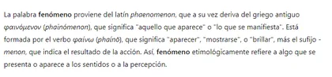
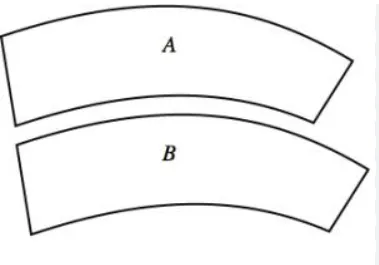
entre el mundo sensible, cambiante y a menudo engañoso,
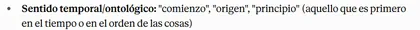
y el mundo inteligible, que contiene la verdad inmutable. Para los presocráticos, el desafío era explicar el arjé*, o principio fundamental, que subyace a todas las cosas y que podría proporcionar un conocimiento firme y universal.
Infografía La realidad última
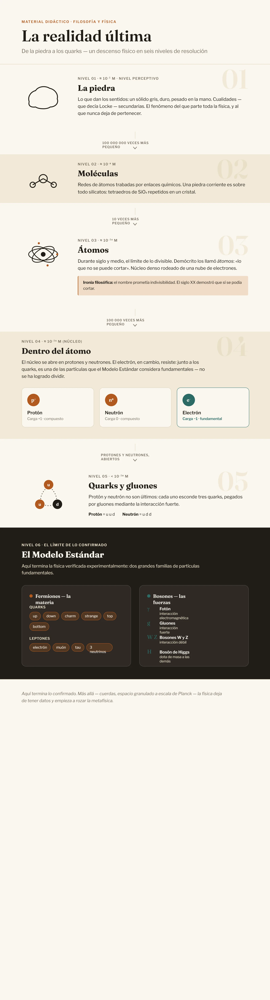
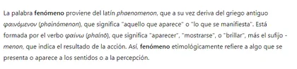
Pitágoras y sus seguidores encontraron en los números y las proporciones matemáticas la clave para comprender la estructura subyacente del cosmos.
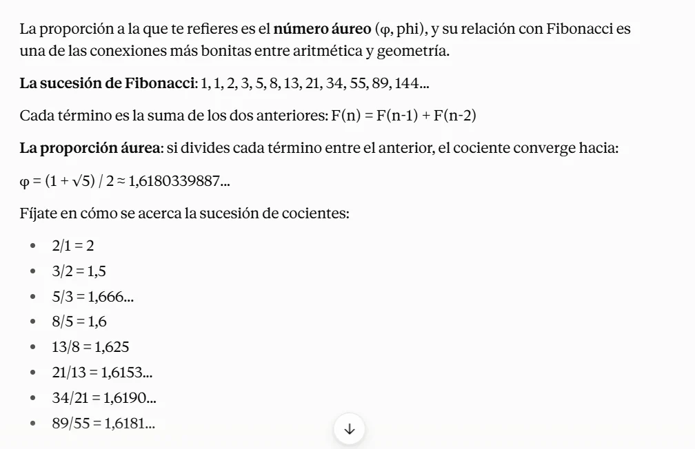
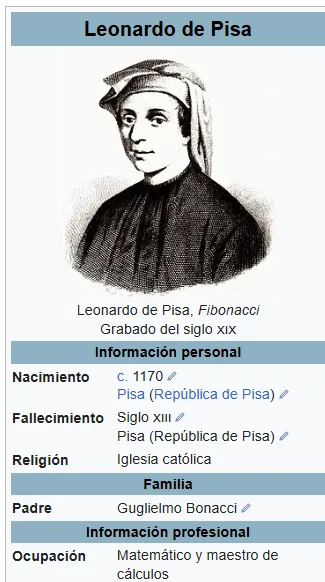
En contraste, Parménides negó la posibilidad de cambio y defendió que solo el ser inmutable es objeto del conocimiento verdadero, rechazando la experiencia sensible como ilusoria.
Heráclito, por su parte, sostuvo que la realidad es un flujo constante de cambio y que el verdadero conocimiento reside en comprender el logos, el principio racional que unifica y gobierna ese devenir.
Finalmente, el conceptualismo socrático propuso una nueva forma de abordar el problema del conocimiento, enfocándose en la definición de conceptos universales que son descubiertos mediante la razón. Sócrates no se contentaba con las opiniones y creencias comunes, sino que buscaba un conocimiento basado en la reflexión crítica y el diálogo, en un intento de alcanzar verdades inmutables sobre el bien, la virtud y la justicia.
La principal preocupación platónica es la polis, pero, para poder entender qué es una comunidad política y su organización, Platón construyó una teoría general (METAFÍSICA Y GNOSEOLOGIÁ) acerca de la realidad y del ser humano.
los pitagóricos, para la concepción del alma;
Heráclito, para la idea de la mutabilidad de lo sensible;
Parménides, para su teoría del ser, las ideas y la episteme;
y sobre todo, Sócrates.
👓 Por eso, este trabajo explorará cómo Pitágoras, Parménides y Heráclito abordaron el problema del conocimiento, y cómo el conceptualismo socrático se presenta como una respuesta filosófica a las limitaciones de las propuestas presocráticas.
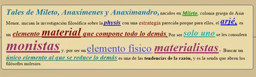
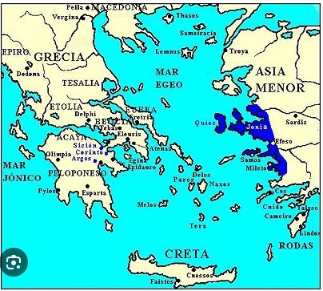
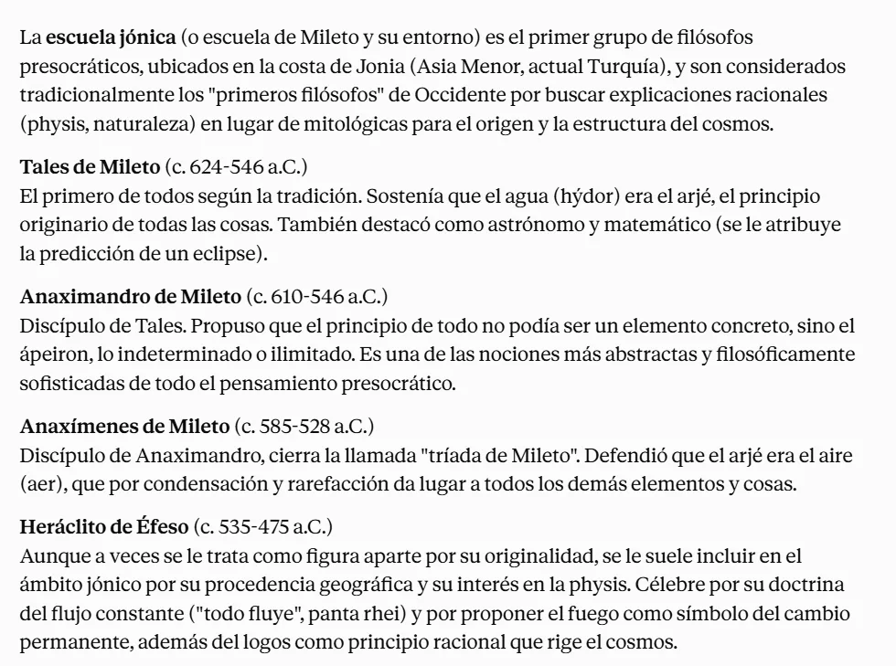
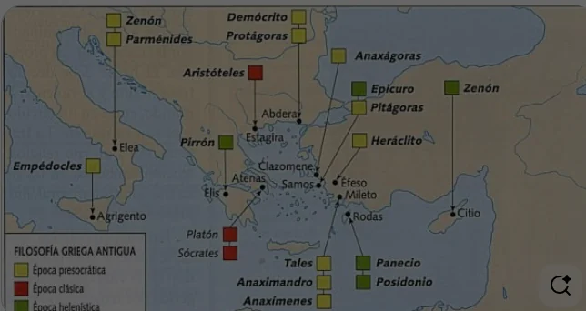
Heráclito, llamado «el Oscuro»* por el estilo enigmático de sus enseñanzas, desarrolló la idea todo en la realidad está en constante cambio y flujo, en un perpetuo devenir.
El cambio, la variabilidad, la mutabilidad, es evidente especialmente en el mundo que percibimos a través de los sentidos. Su aforismo* "no es posible bañarse dos veces en el mismo río, porque nuevas aguas fluyen sobre ti", es una metáfora de la impermanencia y del dinamismo del universo. En efecto, cada instante es diferente al siguiente y el mundo es un conjunto de transformaciones de todo tipo (nuestro propio cuerpo está en un proceso de continuos cambios fisiológicos -eso es estar vivo- y nuestra mente nunca se detiene).
👓 «No se puede uno bañar dos veces en el mismo río. Descendemos y no descendemos al mismo río, somos y no somos*. Los que descienden se sumergen en aguas siempre distintas en su fluir incesante,»
No es el mismo río, pero lo es; somos y no somos. Esto es importante, porque significa que Heráclito no era heracliteano, es decir, no sostenía, como algunos manuales le hacen decir, que el incesante fluir de las cosas destruye continua y enteramente su identidad. . Heráclito veía a las cosas permanecer cambiando y cambiar permaneciendo.
No es que "todo se disuelva en nada" y no quede ningún tipo de identidad —esa es la lectura cratílica y extremista que Platón (en el Crátilo y el Teeteto) le atribuye a Heráclito, radicalizándola hasta la parálisis del lenguaje ("si todo fluye, nada se puede ni nombrar")—, sino que la identidad de una cosa reside en una organización o medida (el logos, el métron) que se mantiene precisamente a través del cambio de su estructura material, no a pesar de él ni al margen de él. El río sigue siendo "el mismo río" —mismo nombre, mismo cauce, mismo patrón de flujo— justo porque el agua cambia constantemente; si el agua no cambiara, no sería un río, sería un estanque.
A nivel del organismo: la materia que te compone (átomos, moléculas, buena parte de tus células) se recambia continuamente* por procesos metabólicos —hay tejidos que se renuevan por completo en semanas o años—, y sin embargo "tú" permaneces como la misma entidad reconocible. Lo que permanece no es la materia, sino el patrón organizativo que esa materia va instanciando sucesivamente.
la arquitectura anatómica y fisiológica que se mantiene mientras se recambian los tejidos,
los circuitos reguladores (hormonales, neuronales) que sostienen el equilibrio del organismo,
y —si se quiere ampliar más allá de lo biológico— la continuidad psicológica (memoria, carácter, biografía)
Todo esto nos hace reconocible como "tú" aunque ni un solo átomo de tu cuerpo actual coincida con los de hace veinte años.
Lo importante, y esto es lo verdaderamente heraclíteo del asunto: ese patrón no es estático a pesar del cambio, sino que se sostiene mediante el cambio —el equilibrio metabólico no es una pausa en el flujo, es un flujo constante y regulado—. Por tanto, no es que haya una cosa estable detrás del cambio, sino que la estabilidad misma consiste en un modo particular, medido, de cambiar.
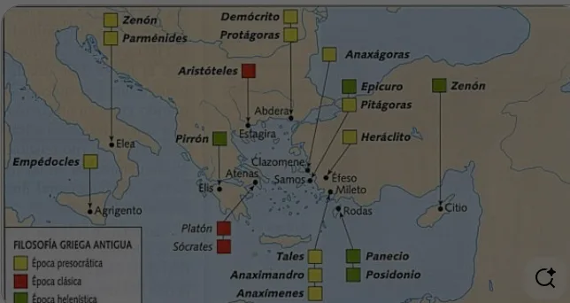
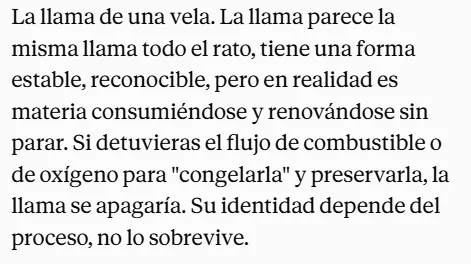
A nivel de la propia molécula de ADN: Los propios átomos que forman las bases nitrogenadas de tu ADN* también se reemplazan —por reparación, por recambio metabólico de nucleótidos— y aun así la secuencia, la estructura lógica de las "letras" (A-T-C-G), se conserva. Es decir: el soporte material cambia, el patrón informacional permanece.
El propio Heráclito insiste en que hay un logos común, siempre verdadero, que rige el intercambio (fr. B1, B2, B30 —el fuego se enciende y se apaga "con medida"—). No es un flujo caótico sin ley, sino un cambio regulado. El ADN como código, como estructura lógica que gobierna qué materia entra y sale y cómo se organiza, es un modelo casi perfecto de ese métron.
El ADN, a diferencia del logos heraclíteo, no es estrictamente eterno ni inmutable: muta, se degrada, evoluciona a lo largo de generaciones.
El logos de Heráclito se presenta como siempre verdadero y común a todos (fr. B2). Así que el ADN es un buen ejemplo de "identidad estructural que persiste mientras la materia cambia" a escala de una vida (esto es, a nivel del organismo), pero no reproduce la pretensión de eternidad cósmica del logos.
La imagen del remolino de agua o la llama de una vela encendida. En efecto, mantienen una forma reconocible y estable durante un tiempo, pero ninguna molécula de agua o de gas permanece en él: el remolino es el patrón de flujo, no las moléculas que en cada momento lo atraviesan. Por eso Heráclito eligió el fuego como arché precisamente porque un fuego solo "existe" como proceso de combustión continua, nunca como sustancia fija—. El organismo es eso, pero mucho más complejo: no un patrón de flujo pasivo, sino uno que se autorregula activamente.
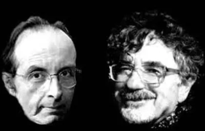
👓 La autopoiesis (Maturana y Varela). El organismo no es un patrón de flujo pasivo, sino un patrón que se autorregula activamente. Un organismo vivo no se define por qué átomos lo componen, sino por la red cerrada de procesos metabólicos que se producen mutuamente y regeneran continuamente los propios límites y componentes del sistema: tus células fabrican las proteínas que reparan tus células, tu metabolismo mantiene las condiciones que permiten que el metabolismo siga funcionando (homeostasis). El "patrón organizativo" es precisamente esa red de relaciones funcionales autosostenida —qué hace cada parte, cómo se regulan entre sí, qué equilibrios mantienen—, no el material que en cada momento ocupa esas funciones.
La autopoiesis es un concepto acuñado en 1972 por los biólogos chilenos Humberto Maturana y Francisco Varela (en De máquinas y seres vivos) para responder a una pregunta que hasta entonces no tenía una respuesta rigurosa: ¿qué es, exactamente, lo que distingue a un ser vivo de una máquina o de un cristal? Su respuesta no apela a la composición química ni a ninguna sustancia especial, sino a un tipo particular de organización.
La definición formal. Un sistema es autopoiético (auto = sí mismo, poiesis = producción, creación) cuando está organizado como una red cerrada de procesos de producción de componentes tales que esos mismos componentes:
(1) regeneran continuamente la red de procesos que los produjo,
y (2) constituyen al sistema como una unidad distinguible del entorno, especificando su propio límite (en la célula, literalmente la membrana).
Dicho de otro modo: el sistema se produce continuamente a sí mismo. No hay un fabricante externo ni un plano fijo aparte del propio proceso —el sistema es el proceso de mantenerse.
La organización es el conjunto de relaciones que definen a un sistema como perteneciente a una clase determinada —lo que lo hace "ser eso" (una célula, un organismo)—. Esta tiene que permanecer invariante; si cambia, el sistema deja de ser esa unidad y se convierte en otra cosa (o se disgrega).
La estructura es la realización material concreta de esa organización en un momento dado: los componentes físicos particulares y sus relaciones efectivas aquí y ahora. Esta sí cambia, continuamente, sin que la organización se altere.
Esto es, literalmente, la formalización biológica de "permanecer cambiando": la célula (o el organismo) mantiene su organización —el mismo tipo de red de relaciones funcionales— mientras su estructura —qué moléculas concretas la realizan— se recambia sin cesar.
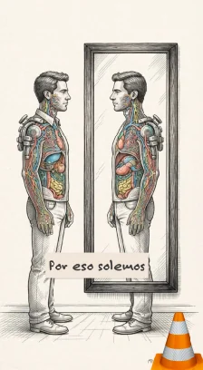
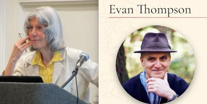
🚨 Apunte final. Varela extendió después esta idea, junto con Evan Thompson y Eleanor Rosch (The Embodied Mind, 1991), hacia una teoría de la cognición —el llamado enactivismo—, sosteniendo que también la mente y el conocer son expresiones de este mismo tipo de autoproducción, y no un espejo pasivo del mundo. Es una línea interesante para conectar a Heráclito con epistemología contemporánea.
El enactivismo parte de un diagnóstico: las dos grandes teorías de la mente que dominaban la ciencia cognitiva de los 80 estaban, para Varela, Thompson y Rosch, igualmente equivocadas, aunque en direcciones opuestas. El problema que quieren resolver.
Por un lado, el cognitivismo clásico (la mente como ordenador que manipula representaciones internas) asume que existe un mundo ya hecho, con propiedades fijas, y que la mente lo capta mediante representaciones más o menos fieles —el viejo modelo del espejo—.
Por otro, cierto constructivismo radical cae en el extremo contrario: si no hay acceso directo al mundo, la mente lo construye desde dentro, y el "mundo exterior" se vuelve casi prescindible o arbitrario.
The Embodied Mind (1991) (traducción La mente encarnada. En español, De cuerpo presente: las ciencias cognitivas y la experiencia humana), busca una tercera vía entre estos dos polos, y la etiqueta enacción (enaction): ni el mundo está dado de antemano y a la espera de ser representado, ni la mente lo inventa desde la nada. Mente y mundo co-emergen en la historia de interacciones de un organismo.
La tesis central: "traer un mundo a la mano" (bringing forth a world). Un organismo no descubre un mundo preexistente con sus propiedades ya recortadas; mediante su propia organización (recuerda el acoplamiento estructural del que hablábamos con la autopoiesis) enacta, hace emerger, un dominio de significado propio y relevante para él.
El ejemplo clásico —tomado de Jakob von Uexküll, biólogo que Varela cita explícitamente— es la garrapata: su "mundo" (Umwelt) se reduce a temperatura, ácido butírico y textura de la piel; no es que perciba "menos" del mismo mundo que nosotros, es que su organización enacta un mundo cualitativamente distinto, ni más pobre ni más rico, simplemente otro. Un murciélago, una abeja y un ser humano no habitan el mismo mundo visto desde ángulos distintos: cada organización enacta su propio dominio de relevancia.
Esto es la autopoiesis extendida del organismo a la cognición: así como la célula no está "programada desde fuera" sino que su propia red de procesos determina qué cuenta como perturbación relevante, la mente no procesa pasivamente "datos" del entorno, sino que su propia estructura (sensorial, motriz, histórica) determina qué aparece siquiera como algo perceptible o significativo.
Así como Heráclito sostiene que las cosas "permanecen cambiando y cambian permaneciendo", el enactivismo sostiene que el conocer no es ni un reflejo fijo de un mundo fijo ni un caos sin ley, sino una regularidad que se sostiene en el propio acto de conocer —un logos cognitivo, podría decirse, que ni preexiste al organismo ni es arbitrario, sino que se constituye en el mismo proceso de vivir y conocer.
La forma aristotélica (hilemorfismo). Aristóteles, heredero indirecto de este problema, distinguirá hyle (materia) de eidos o morphé (forma) precisamente para resolver este tipo de casos: lo que hace que un montón de materia sea "este caballo" y no otra cosa no es la materia en sí (que se puede sustituir), sino el principio organizador que la estructura y le da sus funciones y capacidades características. Se puede argumentar, de hecho, que el logos heraclíteo es un precursor de esa idea, un siglo antes de que Aristóteles le diera aparato conceptual.
Heráclito afirma que hay una unidad subyacente a los cambios, en tanto que ese proceso continuo de generación y muerte, no es azaroso o caótico (y tampoco depende del capricho de los dioses), sino que ocurre según cierta medida, es decir, siguiendo cierta pauta o razón (logos), y esta no es otra que la conciliación de opuestos (necesarios para mantener la armonía del cosmos). El logos actúa, pues, como una ley universal que unifica y organiza todos los procesos naturales.
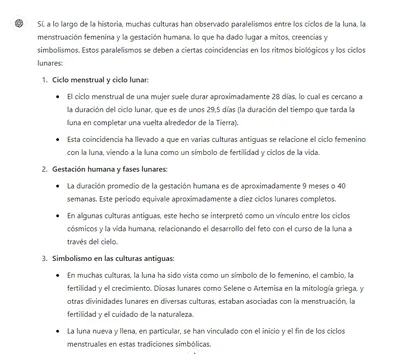
Primero, porque todos los cambios se producen en un orden temporal o aión (el tiempo concreto y específico del fenómeno o del acontecer).
Y, segundo, porque esa forma de acontecer concreta queda estructurada en forma de pares que se oponen (noche/ día, calor/ frío, bueno/ malo, salud/enfermedad, vida/muerte …). Esta lucha de contrarios revela -o mejor- desvela, desoculta y nos muestra la estructura del arjé: "La guerra (πόλεμος) es el padre de todas las cosas". Esta dialéctica hace que todo se mueva, que todo está en continuo movimiento, en continua transformación: todo fluye. Es la fuerza interna de la naturaleza que hace que esta crezca y se desarrolle.
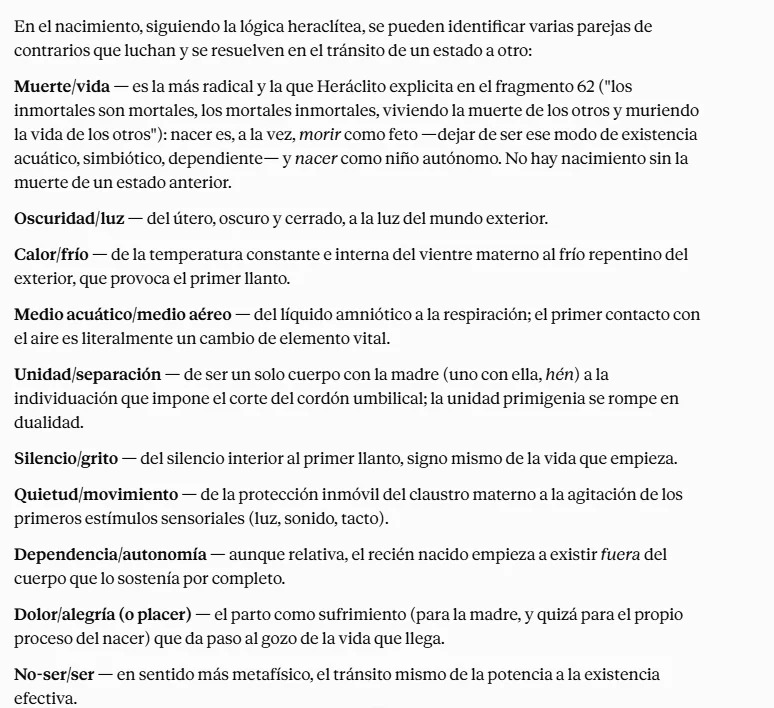
👓
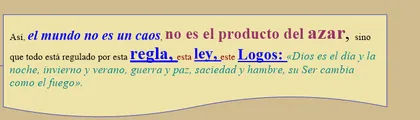
Dicha unificación de la totalidad de los procesos naturales que posibilidad el logos, lo ejemplifica Heráclito bajo la analogía del fuego. De forma semejante a cómo el fuego adopta apariencias multiformes y lo unifica, se puede llamar UNO al logos.
Utiliza el fuego como una metáfora o como un símbolo de ese cambio constante, puesto que el fuego es un elemento dinámico, en perpetuo movimiento, que consume y transforma todo lo que toca. El cosmos no es estático, sino un proceso de creación y destrucción constante, que "siempre fue, es y será fuego eterno". Así las cosas, el cambio incesante no es lo contrario de la permanencia, sino su condición.
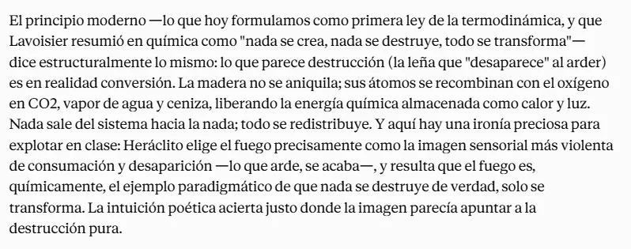
👓
Y, el fuego, además, ejemplifica el logos, porque aunque parezca cambiante y múltiple (el fuego cambia de forma constantemente), sigue siendo una unidad en su esencia. Esto significa que aunque el logos puede parecer diverso en sus manifestaciones (los diferentes procesos naturales y los cambios en la realidad), en su esencia es uno solo, una unidad que subyace a todas las variaciones de la naturaleza.
Por otro lado, el logos (ese principio universal) es algo que no pertenece a los hombres sino a la physis: es inherente a la naturaleza misma, que gobierna todos los procesos naturales sin depender de la intervención o comprensión humana.
La afirmación de que ese logos solo se muestra a la razón, a la atenta reflexión de los hombres despiertos, (frente a la aparente pluralidad de las cosas que se muestra a los sentidos, “de los hombres dormidos”), lo acerca definitivamente a la metafísica de Parménides. El verdadero conocimiento, que está más allá de la comprensión humana inmediata (“la naturaleza ama ocultarse”), requiere una reflexión más profunda, filosófica.
Los "hombres despiertos" no solo perciben el logos, sino que también buscan entenderlo y vivir en armonía con la verdadera naturaleza del cosmos, ajustando su vida y su conducta en armonía con ese principio (logos). Esto significa lo siguiente:
Esto significa no aferrarse a la idea de estabilidad o permanencia, sino más bien abrazar la mutabilidad y la incertidumbre como algo natural.
Quienes entienden el logos, aceptan que todo está sujeto al cambio: nuestras circunstancias, nuestros sentimientos, nuestras relaciones, e incluso la vida misma. En lugar de resistirse a esta realidad, buscan fluir con los cambios de manera consciente, en lugar de luchar contra ellos o sufrir por ellos.
Heráclito también sostiene que los opuestos (como el día y la noche, el calor y el frío, la vida y la muerte) no son contradictorios, sino que son necesarios para la unidad del cosmos. Los "hombres despiertos" reconocen que los opuestos forman parte del equilibrio natural del universo, y en lugar de tratar de eliminarlos o ignorarlos, entienden que ambos extremos son necesarios para el funcionamiento del mundo.
👓 Tanto los momentos de alegría como los de tristeza, el éxito y el fracaso, son partes esenciales de la experiencia humana y del orden natural. Esta comprensión lleva a una actitud de equilibrio frente a las circunstancias, sin caer en la desesperación o en el apego excesivo a lo bueno.
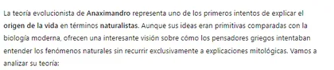
¿Qué piensan los jonios del origen de los animales y del hombre? Anaximandro, fue el primero en explicar de un modo racional el origen del hombre, creando una brillante teoría materialista y evolucionista (naturalista) Así rezan los fragmentos que la expresan:
Anaximandro dice que los primeros seres vivientes nacieron en lo húmedo, envueltos por cortezas espinosas (escamas), y que, al crecer, se fueron trasladando a partes más secas y que, cuando se rompió la corteza (escama) circundante, vivieron, durante un corto tiempo, una vida distinta (12 A 30, Aecio, V, 19, 4).
Dice, además, que el hombre, en un principio, nació de criaturas de especie distinta, porque los demás seres vivos se ganan la vida en seguida por sí mismos y que sólo el hombre necesita de una larga crianza; por esta razón, de haber tenido su forma original desde un principio, no habría subsistido (12 A 10, Ps. Plut. 2).
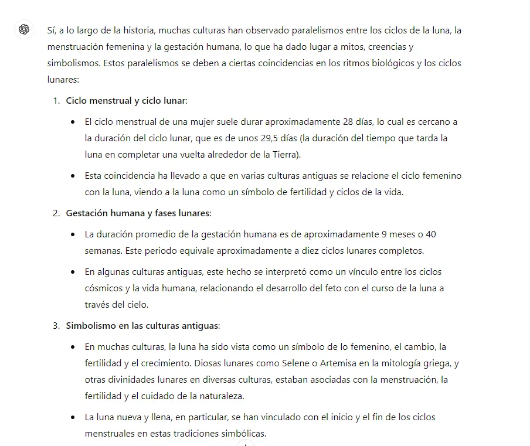
El milesio Anaximandro creyó que del calentamiento del agua y de la tierra nacieron peces y animales muy semejantes a ellos; en su interior se formaron hombres en forma de embrión, retenidos dentro hasta la pubertad; una vez que se rompieron dichos embriones, salieron a la luz varones y mujeres, capaces de alimentarse (12 A 30, Censorino, 4, 7).
Esta afirmación refleja una noción de transformación biológica: los humanos y otros animales evolucionaron a partir de formas de vida más simples y primitivas que habitaban en el agua, antes de adaptarse a la vida terrestre.
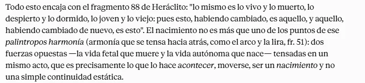
👓
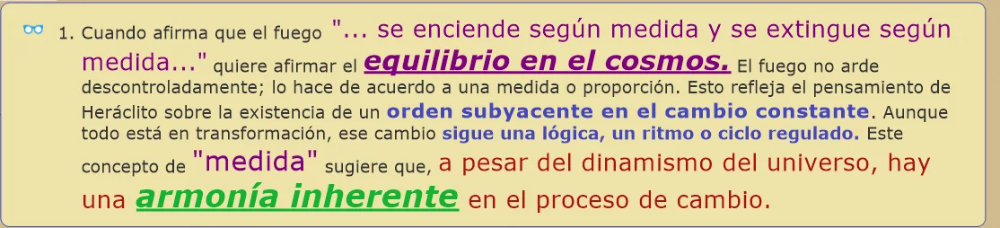
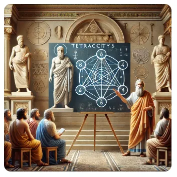
Según afirmaciones de filósofos contemporáneos o escasamente posteriores, como Jenófanes, Heráclito, Parménides, etc., que polemizaron con los pitagóricos, parece que en el pitagorismo existe un núcleo primitivo de teorías muy similares a las de los jonios*, a saber, la contraposición o diferenciación entre lo limitado e ilimitado (que proviene de Anaximandro*). Reapariciones de la distinción anaximandriana entre lo limitado e ilimitado
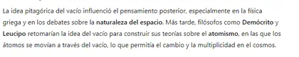
Parménides, del ser y del no ser (de aquí a la doctrina de Demócrito solo hay un paso);
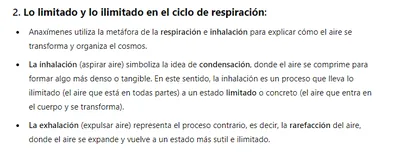
Para este filósofo el arjé es el aire. Se ha especulado mucho sobre por qué eligió este elemento. Son varias las razones: por ejemplo, la descripción del alma como una especie de aire o aliento, por la importancia de la respiración en los animales o por ser un elemento que se extiende sin límite.
es como el alma del Mundo (compara el aire cósmico con el alma-aliento vivo): el hombre vive mientras respira y muere cuando deja de respirar.
De él ha salido todo por condensación y rarefacción. El aire domina y mantiene unido al Cosmos de la misma manera que el alma lo hace con el cuerpo. La Tierra, nos dice, es como una gran hoja flotando en el aire.
El aire es un dios engendrado (elemento mítico) infinito e inmenso; Este primer principio tiene la capacidad de pensar, indispensable para gobernar.
Su pensamiento quizá suponga un retroceso respecto a Anaximandro, pues toma como arjé un elemento particular,y no abstracto. Pero Anaxímenes nos ofrece un mecanismo de explicación de la generación de las cosas a partir de otro elemento distinto de ellas: ese mecanismo de generación se apoya en las nociones de "condensación" y "rarefacción".
¿Cómo se forma todo lo que hay a partir del aire? Anaxímenes explicó que todo dependía de la densidad de este único ingrediente. Así, el aire, en continuo movimiento y cambio, está sometido a dos tipos de procesos: de condensación, ligado al frío, y rarefacción (expansión), ligado al calor.
👓 La rarefacción genera el fuego, mientras que la condensación el viento, las nubes, el agua, la tierra y las piedras; a partir de estas sustancias se crea el resto de las cosas.
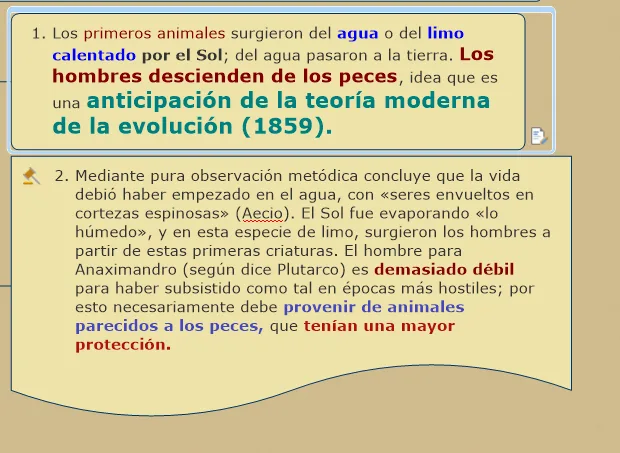
👓 Por condensación del aire, dice Anaxímenes, se forman las nubes; si las nubes se condensan se forma el agua; la condensación del agua da lugar a la constitución del hielo de la tierra; y la condensación de la tierra da lugar a la constitución de las piedras y los minerales; el proceso inverso lo representa la rarefacción: piedra, tierra, agua, nubes, aire y, por último la rarefacción del aire produciría el fuego.
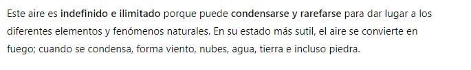
Los atomistas radicalizarán después esta misma intuición del vacío pitagórico, oponiendo lo lleno (los átomos) a lo vacío (el espacio)."
Aristóteles (Metafísica A5, 986a) nos transmite la famosa "tabla de los diez opuestos" pitagórica, encabezada precisamente por peras (límite) / ápeiron (ilimitado). Pero hay un giro importante respecto a Anaximandro:
En Anaximandro, el ápeiron es el único principio originario (monismo): de él surge todo lo limitado, y a él vuelve. Lo ilimitado tiene prioridad ontológica absoluta.
En los pitagóricos, límite e ilimitado son dos co-principios igualmente originarios (dualismo): El número ,-y con él el cosmos ordenado- surge mediante una operación: la imposición del peras -el límite- (lo impar, la forma, la unidad) sobre el ápeiron -el ilimitado- (lo par, el vacío indeterminado, la pluralidad sin forma). : Ya no es una cosmología física (como en Anaximandro), sino una teoría numérico-geométrica de la realidad.
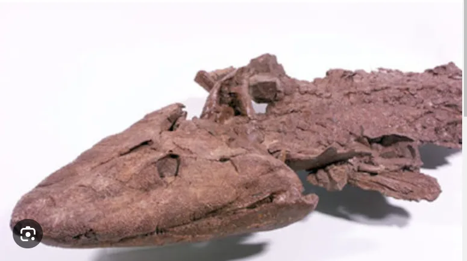
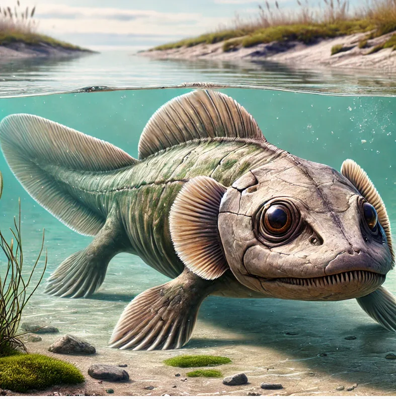
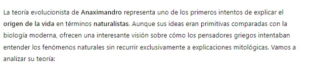
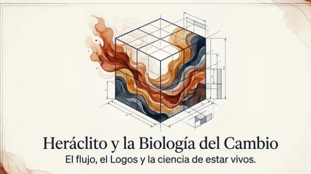
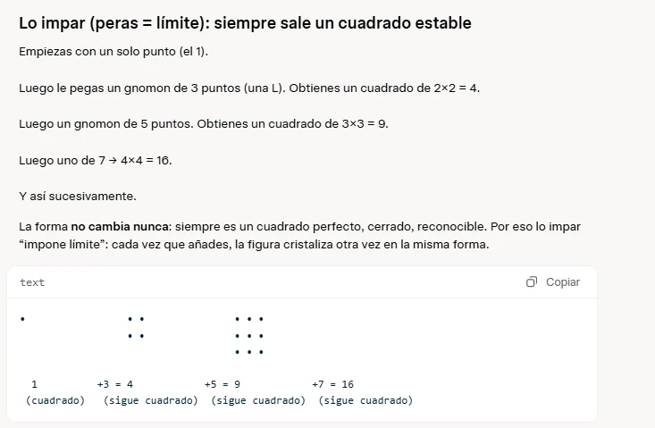
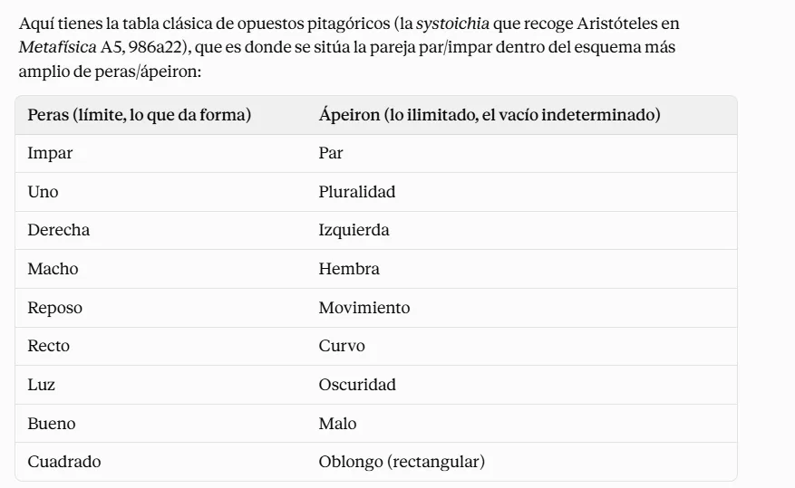
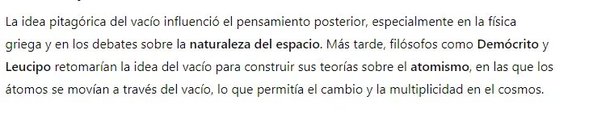
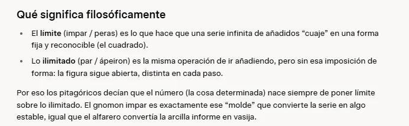
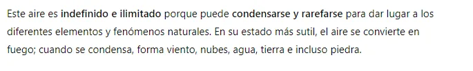
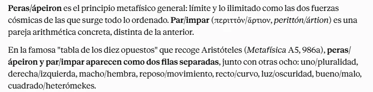
Aunque haya un pensamiento similar al de los jonios, concretamente a Anaximandro, hay, empero hay cuatro especificidades pitagóricas:
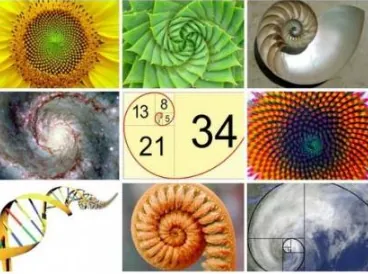
la afirmación de que los números son la esencia y el origen de las cosas. Esto es, organizan la materia a través de proporciones precisas. Los números, por tanto, gobiernan la estructura subyacente del universo.
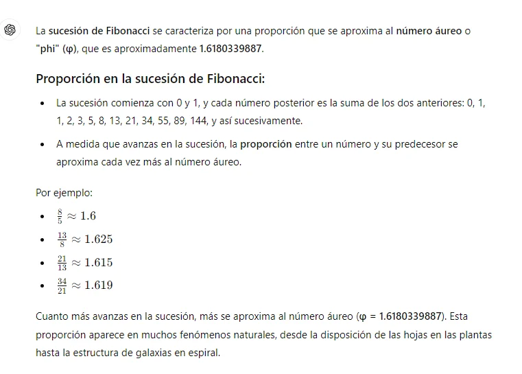
la preexistencia y transmigración de las almas;
la purificación por medio de prácticas ascéticas, de la ciencia y de la música
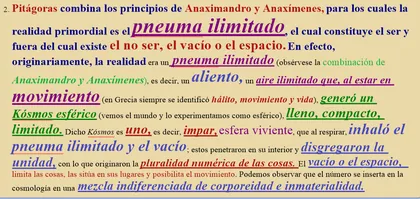
El pitagorismo defiende que el Kósmos es y se comporta como un organismo vivo, humano, y su desarrollo es como el de la generación de los animales y de los hombres:
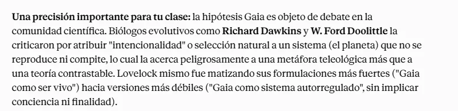
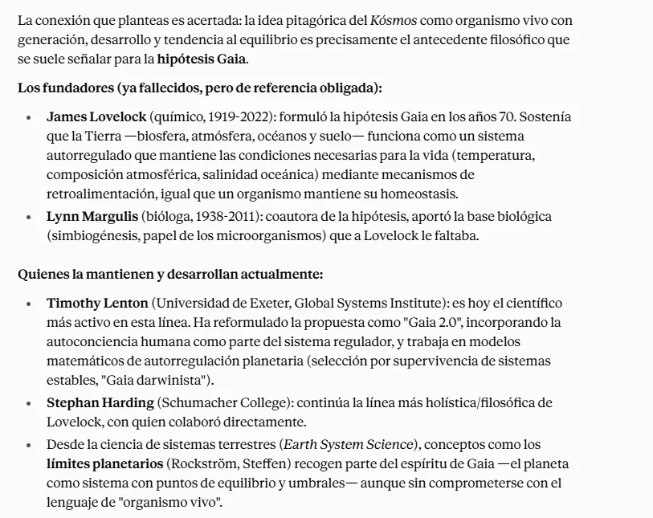
El formalismo-idealismo dentro del pitagorismo se refiere a la idea de que los números y las proporciones matemáticas no son solo principios materiales, sino también principios ideales que subyacen a la realidad. En este sentido, los números tienen una existencia abstracta y son la verdadera esencia del cosmos. Según los pitagóricos, los números no son meras herramientas para describir el mundo material, sino las formas perfectas e inmutables que gobiernan el orden y la armonía del universo.
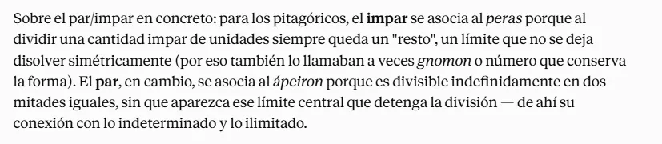
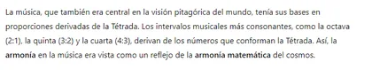
Los primeros cuatro números tenían espacialidad. El uno es el punto; el dos, la recta; el tres, la superficie; y el cuatro, el volumen. Y los cuatro sumados dan el número diez, que es el número perfecto. Estos cuatro primeros números formaban la llamada Tetractys, un enigma para nosotros, pero muy importante para los pitagóricos, que la consideraban la clave de todas las armonías que gobiernan el mundo.
El uno es el origen de la serie de los números naturales, que crean figuras (formas) geométricas, que delimitan o estructuran la materia; así,
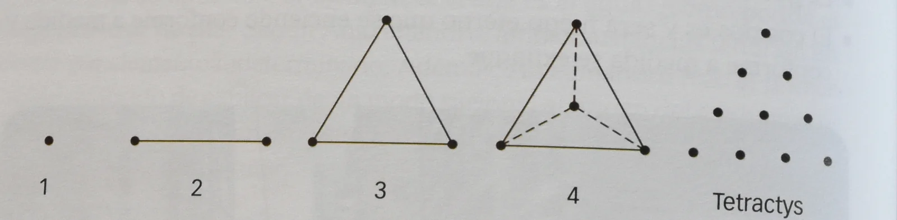
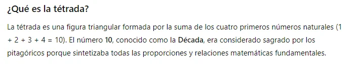
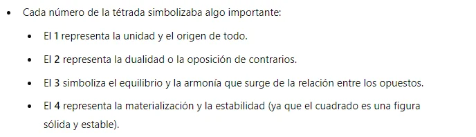
de los puntos se deriva la línea; de la línea, la superficie; de las superficies, los sólidos; y de éstos, los elementos. No deseamos cometer anacronismos, pero aquí hay, en su origen, una tendencia hacia una consideración matemática de la naturaleza, que luego Platón desarrollará en el Timeo.
👎
👓 Las cosas, pues, son números (son la causa tanto material como formal de la realidad): unos puntos forman una línea; varias líneas forman una superficie; varias superficies combinadas forman un cuerpo; es decir, puntos, líneas, superficies (números) son las unidades reales que componen todos los cuerpos.
Comentario: Por tanto, todos los cuerpos deben ser considerados como números; a cada cosa, a cada ser, se les puede aplicar un número, y así toda la naturaleza se compone de números.
El principio racional que ordena la naturaleza son las relaciones cuantitativas, mensurables y susceptibles de formularse matemáticamente. Así la naturaleza se rige por armonías matemáticas, que la explican en profundidad. Esta concepción influirá en la filosofía Platónica, y cómo no en la matematización de la naturaleza de Galileo. (s. XVI)
Pasaje que suele citarse como uno de los manifiestos fundacionales de la ciencia moderna: rompe con la física cualitativa aristotélica y establece el programa matematizador que después seguirán Descartes, Newton, etc.
👓
La otra teoría importante del pitagorismo es la inmortalidad y transmigración de las almas, con las consecuencias éticas y antropológicas que ello comporta.
Alcmeón de Crotona está vinculado al círculo pitagórico —vivió en Crotona, coincidiendo con la escuela de Pitágoras, y Aristóteles lo menciona junto a los pitagóricos en otros pasajes de la Metafísica—, pero conviene no confundir dos doctrinas distintas:
La doctrina pitagórica propiamente dicha sobre el alma es la metempsicosis (transmigración de las almas), asociada a Pitágoras mismo.
El argumento de Alcmeón* aquí es otro: la inmortalidad del alma se funda en su automovimiento perpetuo*, por analogía cosmológica con los astros (la luna, el sol, las estrellas), que para los griegos están en movimiento circular eterno y son por ello divinos.
Influencia en Aristóteles. Aristóteles resume la opinión de Alcmeón de Crotona y la agrupándola junto a las de Tales, Diógenes de Apolonia y Heráclito, todos los cuales, según él, sostienen que el alma es inmortal por ser automotriz (se mueve a sí misma) o por participar del movimiento eterno de lo divino.
El pitagorismo (influido por el orfismo*) defiende una teoría del alma eterna e inmortal, armónica. El alma es del "linaje de los dioses" (inmortal), y de la sustancia de los astros -ígnea (fuego) y se reencarna según el pago de culpas.
Más allá de la religión «oficial» de los dioses olímpicos, la cultura griega estuvo marcada por creencias y cultos iniciáticos*, de carácter más íntimo, que tenían que ver con la vida después de la muerte. Uno de los movimientos más importantes es el orfismo, que proviene de Orfeo, personaje legendario de origen tracio (antigua civilización que se desarrolló en la península balcánica) al que se le atribuían dotes proféticas y estaba vinculado al dios Apolo y a la música.
👓
👓
El orfismo mantiene que el ser humano alberga en su interior un principio divino, el alma, que está encerrada en un cuerpo debido a una culpa anterior en otra vida. El alma no muere junto al cuerpo y debe purificarse para escapar al ciclo de transmigraciones (metempsicosis) y reencarnaciones en otros cuerpos (está atrapada en un ciclo de reencarnaciones). Por eso, el sentido de esta vida para los órficos era la purificación del alma a través de ciertas pautas de vida y determinadas acciones que, debido a su carácter práctico y a su transmisión oral y de tipo iniciático, no han llegado hasta nosotros. Estas creencias tendrán una gran influencia en la doctrina pitagórica y serán recogidas posteriormente por la filosofía platónica.
Dice Porfirio, filósofo del siglo III d.C.: «Pitágoras sostenía que el alma era inmortal, que se transformaba en otra clase de seres vivos y que los seres retornaban cada ciertos ciclos y que nada era absolutamente nuevo y que todos los seres vivos deben considerarse emparentados».
Relación del orfismo con el pitagorismo. El propio pitagorismo se suele considerar heredero directo del orfismo en su antropología del alma:
ambos comparten la idea del alma como algo divino y caído, sujeta a metempsicosis y necesitada de purificación (catarsis)
—con la diferencia de que en el pitagorismo esa purificación se realiza sobre todo mediante las matemáticas y la contemplación del orden armónico del cosmos, mientras que el orfismo insiste más en el ritual, la ascesis y la iniciación mistérica*.
Es la misma lógica de fondo que luego reaparece filosóficamente en Platón: en el Fedón, describe la filosofía misma como una forma de "verdadera iniciación mistérica" (teletē), donde el filósofo purifica el alma del cuerpo mediante el conocimiento, ocupando el lugar que antes ocupaba el rito religioso.
Se rompe así la separación Hombre-Dios del pensamiento griego tradicional. Con Pitágoras el alma humana está destinada a la inmortalidad mediante el conocimiento. En efecto, si somos capaces de entender el orden divino del universo es porque tenemos algo divino. Conocer el orden del universo es cultivar el elemento divino de uno mismo.
Platón, en concreto en el Timeo, expresa algo que subrayaría Pitágoras: "estudiar el cosmos visible en sus aspectos de orden nos lleva al conocimiento de Dios".
Cuando el alma, ha sido totalmente purificada, se libera de la metempsícosis, se libera de la cárcel del cuerpo, para volver a su origen. El alma humana sería una parte del alma del mundo encarnada en el cuerpo (Anaxágoras, Heráclito)
La vida humana tiene como objeto, por tanto, perfeccionar el alma desprendida de la divinidad hasta volver a ella. ¿Cómo?: la purificación no consiste solo en seguir un ritual o unos preceptos, sino usar la razón en búsqueda del conocimiento del mundo.
👓 Se puede admitir que Pitágoras aceptó la doctrina de la metempsícosis. El renacimiento religioso había devuelto a la vida la vieja idea del poder del alma y de que su vigor perdura tras la muerte, en contra de la concepción homérica de las sombras de los difuntos como incapaces de articular palabra. Aquí se presenta Pitágoras con algo inaudito. Lo que permanece fuera del cuerpo no es un resto miserable, sino lo verdaderamente vivo. La vida que sigue a la presente no es un pálido reflejo, sino la verdadera y más intensa vida. La existencia terrena del hombre es sólo una de sus vidas posibles y una de las más pequeñas. El alma es lo más alto, prisionero en el cuerpo. El alma va tomando los más distintos cuerpos de todas las cosas que hay en el cosmos. La forma más alta y propia del alma parecen haber sido los astros, y donde llega la influencia pitagórica hallamos también la doctrina del parentesco del alma con la sustancia de los astros. El alma es eterna por ser semejante a los astros, y tiene en ellos su verdadera morada.
Los pitagóricos consideran inmortal al alma humana. Esto es nuevo en Grecia. La psique en Homero estaba subordinada al cuerpo. Se hablaba del valor, y podía sobrevivir, pero como sombra que necesitaba un cuerpo. La idea de la inmortalidad humana para los griegos de Homero sería blasfema.
Parentesco de todos los seres vivos: si el alma puede pasar de un cuerpo humano a uno animal —o incluso vegetal, según Empédocles—, entonces todos los seres vivos comparten algo de la misma naturaleza.
👓 El alma va tomando los más distintos cuerpos de todas las cosas que hay en el cosmos. Pero el alma tiene en su mano el decidir la clase de cuerpo en el que va a introducirse, y que puede ser el cuerpo de una bestia o de un dios. Por lo tanto las almas podían reencarnarse en forma de seres vivos distintos del hombre, lo que, a su vez, sugiere el parentesco de todos los seres vivos. La versión de Empédocles incluía algunas plantas entre los seres vivos, y, por esta razón se pedía la abstención de las hojas de laurel y de las habas. Es muy posible que también Pitágoras creyera que era posible la reencarnación en forma de planta. Sobre este tema Empédocles escribe lo siguiente : “Lo que sobre él (Pitágoras) dice es lo siguiente: -Dice que al pasar él, en una ocasión, junto a un cachorro que estaba siendo apaleado, sintió compasión y dijo: Cesa de apalearle, pues es el alma de un amigo que reconocí al oírle gritar-. Se piensa que esta doctrina fue aprendida por Pitágoras en el extranjero. Escritores tardíos dicen que visitó a los caldeos, indios brahmanes, los judíos, druidas o celtas. Heródoto sugiere que su teoría proviene de Egipto.
👓
👓
Pitágoras describe el alma como "armónica" por una razón que hunde sus raíces en su descubrimiento más célebre: el de que los intervalos musicales agradables al oído (la octava, la quinta, la cuarta) se corresponden con proporciones numéricas simples y exactas (2:1, 3:2, 4:3), obtenidas —según la leyenda— experimentando con las longitudes de una cuerda tensada o con el peso de los martillos de una fragua. De ahí surge la convicción central del pitagorismo: el número es el principio de todo orden, y donde hay orden hay proporción numérica, es decir, armonía (en griego, harmonia significa literalmente "ajuste", "ensamblaje correcto de partes"). El cosmos entero está regido por esa proporción —de ahí la célebre doctrina de la "armonía de las esferas": los astros, al moverse, producirían sonidos que forman entre sí los mismos intervalos consonantes, inaudibles para el oído humano por costumbre.
Para el pitagorismo, ser es estar ordenado numéricamente, y el alma —sea como principio cósmico autónomo, sea como proporción de las partes del cuerpo— es lo que introduce ese orden armónico en un organismo vivo.
El alma comparte el orden numérico-armónico del cosmos. Como ya vimos con Alcmeón, el alma es afín a los astros porque, igual que ellos, participa del movimiento ordenado y eterno que caracteriza a lo divino. En esta versión, ser "armónica" significa participar de la misma estructura racional-numérica que rige todo el universo: el alma es un microcosmos ordenado que refleja el macrocosmos. Esto es compatible con —y de hecho refuerza— su inmortalidad y su parentesco con lo divino.
El alma es la "afinación" (harmonia) de los elementos opuestos del cuerpo. Esta es la formulación técnica más famosa, transmitida sobre todo por Platón en el Fedón (85e-86d), donde Simmias —discípulo de Filolao, un pitagórico— plantea una objeción a Sócrates: muchos sostienen que el alma no es sino la armonía o mezcla proporcionada (krasis) de los elementos opuestos del cuerpo (frío/caliente, seco/húmedo, tenso/relajado…), exactamente igual que la afinación de una lira surge de la correcta tensión de sus cuerdas.
La música fue para los pitagóricos el mejor ejemplo sensible de la armonía que rige el cosmos. Descubrieron que la música se regía por proporciones numéricas; por ejemplo, los sonidos eran más agudos o graves dependiendo de la longitud de la cuerda del instrumento. Pero si la música era especialmente grata a los pitagóricos era porque manifestaba de una manera muy clara la belleza que desprende la armonía, que es propia del orden del cosmos.
👓 La música es la mejor expresión sensible de la armonía del cosmos. Es catarsis que purifica el alma, en tanto ésta es también armonía, y además causa de la armonía del cuerpo, por lo que se considera una auténtica medicina para éste (la enfermedad no es más que la pérdida de la armonía corporal).
👓 Una de las ideas más llamativas de los pitagóricos es la de la música de las esferas. Al estudiar los astros y contemplar las distancias y sus recorridos, afirmaron que cada astro, por estar en movimiento, emitía un sonido que estaba en perfecta armonía con el resto y que expresaba de una bella forma el orden del universo. Pero ¿por qué no oímos esta música de las esferas? Porque estamos acostumbrados a ella desde el nacimiento.
🔗 volantepost.wordpress.com🔗 jpl.nasa.gov🔗 muyinteresante.es
El “mito de la caverna” alude a la diferencia entre los dos mundos (dualismo), que tiene su origen en Parménides. Platón conoció las obras de todos los filósofos presocráticos, pero elogió a Parménides y coincidió sobre todo con él, especialmente …
1. en la distinción de los dos niveles de realidad (el intelectual y el sensible)
2. y en las características del ser verdadero: Lo que decía Parménides del Ser lo aplica Platón a las Ideas. (la influencia del ser de Parménides en la noción de Idea inmutable y eterna, que Platón sitúa en el mundo inteligible.)
Aunque Platón y Aristóteles tachen de idealista o formalista a la escuela eleática, tenemos que decir que se trata de una escuela realista*, puesto que buscaban el arjé (origen) y el lógos de la physis, más allá de las apariencias sensibles. Ahora bien, hay (y la de Parménides es una) tendencias a ultrapasar la identificación ser-mundo; el problema es ¿por qué a la esencia la denomina Parménides con el término ser?
Para muchos es el iniciador de la filosofía en sentido estricto. Es, pues, el padre de la Metafísica (“lo que está más allá a de la física), en cuanto inicia la reflexión sobre el “ser” en cuanto tal, es decir aquello en que consisten todos los seres, y no ya de una forma material, sino de forma conceptual.
Por primera vez, con Parménides la sustancia (el arjé, lo que permanece en todo cambio) no se define como elemento corpóreo o como número sino sólo como “ser”
Parménides reflexiona sobre el ser, “lo que es”, en su máxima generalidad, es decir, libre de determinaciones concretas. El concepto de ser supone la unidad de todas las cosas, lo que unifica todo lo que es.
Parménides de Elea (que tensó el arco de su vida entre la segunda mitad del siglo VI y la primera mitad del V) escribió un poema (Sobre la naturaleza) , conservado gracias a Sexto Empírico y a Simplicio; dicho poema constaba de tres partes, un proemio, una parte llamada «vía de la verdad» (SER) y otra, «de la opinión» (NO SER).
👓 El proemio, en clave y metaforización religiosas, nos narra cómo algunos hombres escogidos son conducidos, en un carro, tirado por yeguas, guiado por las Helíades, a la luz, morada de la diosa, que enseña a esos mortales videntes, tanto la verdad como la opinión. La metaforización religiosa y la presentación de que la ciencia y la filosofía son revelación de los dioses e iluminación no debe extrañarnos, pues son típicas de toda la filosofía griega. Recuérdese el mito de la caverna de Platón.
las percepciones sensoriales y las opiniones impulsivas (los caballos)
y la razón y el conocimiento verdadero (la diosa) en la búsqueda de la verdad y la comprensión de la realidad. Parménides argumenta que solo a través del uso de la razón y la reflexión se puede llegar a una comprensión adecuada de la realidad. El hecho de que la diosa lo guíe sugiere que la verdad es revelada por la razón y la reflexión, no por los sentidos. Las "hijas del sol" simbolizan la luz de la razón y la mente iluminada que es capaz de discernir la verdad y la realidad.
"Lo que es" (el Ser) es eterno, inmutable y único. Afirma que el cambio y la multiplicidad son ilusiones y que la apariencia engañosa de la variedad y el movimiento es el resultado de la opinión humana, no de la verdad. La diosa presenta una visión de la realidad como una esfera perfecta e inmutable.
Si bien Parménides tiene como referencia la noción milesia de la "physis" (ya que se pregunta por la esencia del mundo-naturaleza), lleva a cabo una crítica lógico-ontológica de dicha noción, al proclamar la contradicción existente entre…
1. el devenir del mundo sensible.
Para Parménides el único modo de descubrir la verdadera naturaleza de lo real es el pensamiento, la razón. Es la razón y no los sentidos, la que nos permite alcanzar la verdad fundamental: "El ser es, y es imposible que no sea"
Comentario: Para muchos el iniciador de la filosofía en sentido estricto. Padre de la Metafísica (“lo que está más allá de la física), en cuanto inicia la reflexión sobre el “ser” en cuanto tal, es decir aquello en que consisten todos los seres, y no ya de una forma material, sino de forma conceptual.
Por primera vez, con Parménides la sustancia (el arjé, lo que permanece en todo cambio) no se define como elemento corpóreo o como número sino sólo como “ser”.
Comentario: El Poema: “En el carro, arrastrado por fogosos caballos, marcha el poeta por el camino de la diosa. Lo guían las hijas del Sol, que apartan los velos de sus rostros y dejan la morada de la noche, guardada por la Justicia. La diosa saluda a Parménides y le dice que es menester que aprenda a conocerlo todo, “tanto el corazón inquebrantable de la verdad bien redonda como las opiniones de los mortales, que no tienen verdadera certeza. Hay una clara alusión al paso de la conciencia mítica a la teorética [filosófica : las heliades [hijas del sol] lo han sacado de la oscuridad. La metáfora de los velos significa la verdad, entendida en Grecia como un desvelar (…)” (Julián Marías: Historia de la Filosofía)
👓 Parménides habría procedido como sigue: Sucede, sin embargo, que la esencia del kósmos, o de la physis... no es aquello que se ve. Lo que se observa, y ello es obvio, es algo cambiante, que se transforma continuamente, aparece y desaparece. ¿Cómo puede haber ciencia sobre lo absolutamente cambiante? Para nombrar esa realidad multifacética, se necesitaba un concepto omniabarcador; Parménides usó el de ser, en el sentido de aquello que hace que lo existente sea existente, y, entonces, en la vía de la verdad, reflexiona sobre el significado del término ser (y no sobre la referencia); así, reflexionando ingenuamente sobre el significado del término ser y aplicando una argumentación lógica, en la que influyeron, sin duda, los modelos geométricos de razonar, de gran rigurosidad, expuso: el ser es; si el ser es, su contrario, el no ser, no existe; como el ser es todo (o la esencia de todo), el ser es uno; el ser es ingénito, pues ¿qué nacimiento podrías encontrarle?, no puede nacer del no ser, pues por el axioma se ha estipulado la inexistencia del no ser; tampoco del ser, pues entonces habría dos seres, y, por el axioma se ha estipulado la Uno-Totalidad del ser; por la misma argumentación el ser es imperecedero; el ser es uno, invariable, perfecto e inmóvil.
el camino de la verdad, el de lo que es y es imposible que no sea; Esa Verdad es: "El ser es y el no-ser no es" (Principio lógico de identidad: a=a, y de no-contradicción, ¬ (A ˄ ¬ A), respectivamente).
Este camino de la verdad se refiere al conocimiento racional, que nos revela lo que verdaderamente es sin depender de los sentidos ni de las apariencias cambiantes.
El ser es. Esto significa que lo que existe, lo que tiene ser, es real, inmutable, eterno, y no puede dejar de ser. El ser no está sujeto al cambio ni al devenir. En otras palabras, lo que es, siempre ha sido y siempre será. No puede haber transformación o destrucción porque eso implicaría que algo deje de ser, lo cual es imposible según Parménides.
El no-ser no es: El no-ser, o la nada, no puede existir, ni siquiera como posibilidad. Si algo "no es", simplemente no puede tener ninguna forma de realidad o ser concebido en términos lógicos o racionales.
el otro, el camino de la opinión (doxa), el de los mortales, es el de la mezcla engañosa entre el ser y el no-ser, un camino de ilusión y engaño."
El camino de la opinión (doxa). Es el camino de lo que parece ser, es decir, el mundo de las apariencias, las percepciones sensoriales y las creencias erróneas. Parménides lo asocia con la opinión de los mortales, que confunden el ser con el no ser. Creen que las cosas nacen y perecen, cambian y se mueven, es decir, que son y a la vez no son. Por eso es un camino engañoso y contradictorio. Se distingue del camino del no ser, que es impensable e inescrutable porque de lo que no es nada puede conocerse ni decirse.
Este camino es engañoso porque está basado en el mundo de los sentidos, donde el cambio, el movimiento, el nacimiento y la muerte parecen reales. Los sentidos nos hacen creer que el mundo está lleno de pluralidad, cambio y transformación (no ser). Sin embargo, para Parménides, todo esto es falso e ilusorio, ya que está en contradicción con el ser, que es único, inmóvil e inmutable.
El camino de la doxa (opinión) se refiere a una mezcla de lo que es y lo que no es. Es decir, el error de los mortales consiste en creer que las apariencias, que involucran la dualidad entre el ser y el no-ser (como el cambio o la multiplicidad), son reales. El camino de la doxa es engañoso porque combina lo que "es" (el ser, lo verdadero) con lo que "no es" (el no-ser, lo falso), lo que lo convierte en un camino ilusorio.
¿Cuál es la intención de la diosa al revelar esta distinción al filósofo? Evitar que este se extravíe, que mezcle ser y no ser, pues eso es lo que hacemos los humanos con nuestros «conocimientos». Parménides subraya la diferencia entre el ser y el no ser: el ser es absoluto, no pudo antes no ser, ni puede pasar a no ser: por eso, es necesario. La primera propiedad del ser es la “necesidad” (en sentido lógico). Esto es: negar el ser, decir que el ser no es, es imposible: principio de no contradicción. Ver física cuántica*
Las características del ser en Parménides se derivan de su afirmación central: "el ser es y el no-ser no es". A partir de esta afirmación, Parménides deduce una serie de propiedades que definen la naturaleza del ser. Estas características son las siguientes:
El ser es uno e inmutable. A diferencia de las apariencias que son múltiples y cambiantes, y en las que algunas cosas son pero luego dejan de ser, el verdadero ser siempre es el mismo.
A partir del no ser, no puede aparecer el ser. Esta idea invalida todas aquellas explicaciones del origen del universo que postulan que al principio no había nada y luego aparece algo: eso es imposible para Parménides. Por eso preguntarse por el origen del ser no tiene sentido: «Pues, ¿qué nacimiento podrías encontrarle [...] qué necesidad le habría impulsado a nacer después más bien que antes, si procediera de la nada? Por tanto, es necesario que sea completamente o no sea un absoluto». Ver Eternidad versus origen*
Otra consecuencia es que ya no se puede mantener un único arjé: si, por ejemplo, solo es el agua no habría razón alguna para que dejara de haber solo agua y empezara a haber otras cosas: se pasaría del no ser al ser. A partir de Parménides las propuestas serán pluralistas para poder explicar la variedad de lo que hay.
Otra consecuencia de la crítica de Parménides es que ya no puede sostenerse un único arjé del que surja todo por transformación, como proponían los milesios. Si en el origen solo hubiera agua, no habría razón alguna para que aparecieran cosas distintas del agua: la tierra, el aire o los seres vivos tendrían que surgir de lo que el agua no es. Eso supone pasar del no ser al ser, algo impensable según Parménides. Por eso los filósofos posteriores, los pluralistas, buscarán una salida.
Aceptan que el ser no nace ni perece,
pero afirman que hay varios principios eternos e inmutables cuya mezcla y separación explica la variedad y el cambio aparente de las cosas. Empédocles propone las cuatro raíces (agua, aire, tierra y fuego), movidas por el Amor y el Odio. Anaxágoras habla de infinitas semillas ordenadas por el Nous (la Inteligencia). Los atomistas Leucipo y Demócrito postulan átomos que se mueven en el vacío. Así, nada nace ni muere en sentido estricto: lo que llamamos "nacer" es combinarse, y lo que llamamos "morir" es separarse.
Propiedades lógicas del ser. A partir del concepto de “ser”, y mediante la lógica del pensamiento, Parménides deriva las propiedades que le son propias. En la vía de le Verdad la diosa pasa a deducir lo que se sigue de afirmar que "el ser es y el no-ser no es". Hemos visto que a primera propiedad del ser es la “necesidad” (en sentido lógico). Esto es: negar el ser, decir que el ser no es, es imposible: principio de no contradicción.
Comentario: A partir de Perménides tenemos concepción estática del ser, ya que él caracteriza el ser como único, eterno, infinito, inmóvil e inmutable. Estas características o predicados del ser son los pilares fundamentales de la metafísica. Su metafísica se basa en el principio de identidad y en la identidad entre el ser y el pensar.
El ser es inmutable porque, para que algo cambie, debe pasar de ser a no ser, lo cual es imposible según Parménides. El cambio implicaría que algo deje de ser lo que es para convertirse en otra cosa, lo cual introduce el no-ser (o vacío) en el proceso. Dado que el no-ser no existe, el ser no puede cambiar, moverse o transformarse. Todo lo que es, es siempre lo mismo y no puede ser alterado.
El ser no tiene ni principio (ingénito) ni fin. Si el ser tuviera un inicio, habría venido del no-ser, lo cual es lógicamente imposible, ya que el no-ser no existe. Por lo tanto, el ser debe ser eterno, es decir, siempre ha sido y siempre será. No hay un momento en que el ser "comenzó" o "dejó de ser", porque esto implicaría la intervención del no-ser, lo cual Parménides descarta.
El ser es uno y no puede ser dividido en partes (no admite pluralidad). Si se pudiera dividir, habría un espacio entre las partes que implicaría la existencia de vacío o no-ser, lo cual es imposible. Esto significa que el ser es una realidad continua (homogénea), sin interrupciones, sin separación.
El ser no le falta nada, es completo en sí mismo. Si algo le faltara, entonces tendría que "ser" algo que no es, lo cual es contradictorio. El ser no puede estar incompleto ni en proceso de llegar a ser algo diferente. En este sentido, es perfecto, en el sentido de que no tiene carencias o imperfecciones.
No hay vacío en el ser, ya que el vacío implicaría la existencia del no-ser, lo cual, de nuevo, es imposible. El ser lo llena todo y no deja espacio para el no-ser. Por lo tanto, el ser es completamente pleno, sin huecos, sin discontinuidades.
Parménides utiliza una metáfora geométrica para describir al ser como "esférico". Esta metáfora no implica que el ser tenga una forma física, sino que es un modo de señalar que el ser es homogéneo en todas sus partes, sin diferencias internas, sin variación ni partes superiores o inferiores. Todo el ser es igual en todas direcciones, y no tiene ni inicio ni fin, ni centro ni periferia.
En efecto, sus líneas no tienen principio ni fin y la distancia de cualquier punto de su superficie al centro es idéntica.
Parménides argumenta que pensar y ser son lo mismo. Solo podemos pensar en lo que es, porque pensar en lo que no es (el no-ser) sería pensar en la nada, lo cual es imposible. Esto significa que el ser es aquello que es inteligible, aquello que podemos concebir y pensar. El pensamiento, entonces, solo puede tener como objeto el ser, ya que lo contrario sería un absurdo.
Es decir, el pensamiento capta la realidad (ser), y por ello aplica sus categorías (a=a; ¬ (a y ¬ a)), sacrificando así el ojo a la razón: “Aquello que no puede ser pensado no es, no existe”.
Inmutable: No cambia ni se mueve. No está sujeto a la generación o corrupción.
Eterno: No tiene ni principio ni fin.
Indivisible: Es uno, sin partes ni pluralidad.
Completo: Es perfecto, sin carencias ni defectos. No contiene vacío o no-ser.
Esférico: Homogéneo, equilibrado, sin diferencias internas.
Pensable: El ser es lo que puede ser pensado; no hay pensamiento sin ser.
Estas cualidades del ser, que se captan por la razón, concuerdan bien con el significado o el concepto ser, pero ¿si las aplicamos al mundo? Sucedería que el mundo sería inmóvil, no cambiante, y eso contradice al sentido común. Si se me permite hacer una breve alusión a cómo solucionaron el problema Platón y Aristóteles, se verá mejor el meollo del problema.
Parménides ha llegado a un auténtico callejón sin salida. ← Ha negado la pluralidad, el movimiento, el cambio, es decir, nuestra experiencia del mundo, que para él no son sino ilusión, pertenecen al camino de la opinión (dóxa).
La oposición de Parménides a la filosofía anterior, se evidencia a partir de su tesis ("el ser es y el no-ser no es), pues entre el ser y el no-ser no cabe término medio. Ese término medio sería el devenir (mezcla de no-ser -no es todavía- y ser -que ya lo es-).
Su discípulo Zenón demostrará por "reducción al absurdo" (argumento de Aquiles y la tortuga, y también el del arquero que lanza una flecha a la diana) que el movimiento no existe.
👓
1. no es que no exista el movimiento, porque sí que tenemos "experiencia” (sensible) de él.
2. sino que éste no se puede pensar (i.e. demostrar lógicamente).
Platón dirá que es inaceptable la afirmación parmenídea de que no podemos pensar el no ser porque no existe; debemos atrevernos a pensar el no ser, pues hay diversas maneras de decir no ser: una, no ser como nada, que ciertamente no existe, pero otra, no ser como alteridad o diferencia, para indicar que A no es B.
Con la introducción de los conceptos de dýnamis y enérgeia, potencia y acto, Aristóteles atacó el corazón tanto del axioma como de la argumentación parmenídea.
La dýnamis (potencia) es ser, aunque de distinta manera de ser-enérgeia (acto); luego hay más de un ser (contra el ser-uno parmenídeo);
del ser-dýnaméi (ser en potencia) nace el ser-enérgeia (ser en acto), contra el postulado parmenídeo de que el ser no puede nacer del ser;
Los autores posteriores, y últimos presocráticos, construyeron teorías sobre el reto parmenídeo. Vamos a centrarnos ahora en Empédocles y en Anaxágoras.
Ante el rechazo parmenídeo de la experiencia surgen varios pensadores (Empédocles y Anaxágoras) que intentan conciliar:
1. los cambios de las cosas de la Naturaleza (nacimiento y destrucción) → Heráclito
2. sin admitir el no-ser: → Parménides
→ Optan por una postura intermedia: la explicación del mundo es lo mecánico.
Más tarde Demócrito adoptará un tono desafiante frente a Parménides afirmando: "el No-ser existe". Para explicar los fenómenos sin caer en las redes que cayó Parménides → les es necesario renunciar a la "unidad del ser", postulando así pluralidad de principios.
Empédocles de Akragas (Agrigento, 492-432 a.C.), quien además fue médico, escribió dos poemas; uno, «Acerca de la naturaleza», y otro titulado «Purificaciones». Para Empédocles, el ser es eterno e indestructible (como dijera Parménides), pero está constituido por cuatro raíces o elementos; de esos cuatro elementos se componen todas las cosas; son el fuego, el aire, el agua y la tierra (¿reconocemos viejas teorías?); la realidad es el resultado de la mezcla y separación de estos elementos; todo cambia constantemente, pero no cambian ni los elementos ni la ley que rige el desarrollo del mundo. En efecto, hay, además, dos fuerzas: Amor y Discordia, que unen y separan (respectivamente) los elementos para dar lugar a todo lo que hay.
Empédocles describió un ciclo cósmico, en el que, al principio, cuando el Amor domina sobre los elementos, todo está unido formando una esfera, pero la Discordia, que adopta la forma de vórtice o remolino, ejercerá también su poder y, en una alternancia de dominio entre estas dos fuerzas, se irá generando todo lo que hay.
En Empédocles encontramos una síntesis de la tradición jónica que busca elementos materiales, pero desde un «espiritualismo» cercano al pitagórico. Su antropología es consecuencia de su física; el hombre se compone de una mezcla equilibrada de los cuatro elementos; la salud es armonía. Las «Purificaciones» es un poema que reproduce numerosas teorías órfico-pitagóricas: el alma ha caído en el cuerpo-cárcel; debe someterse a un ciclo de transmigraciones, y la vida virtuosa la liberará.
Empédocles defiende una postura sobre la «mortalidad» humana que deriva de su teoría de los cuatro elementos y las fuerzas: «Otra cosa te diré: ningún ser mortal tiene nacimiento, ni existe el fin de la muerte detestable, sino solo mezcla e intercambio de lo que está mezclado, a esto es a lo que llaman nacimiento los hombres».
👓
👓
👎 Empédocles, en la línea del pitagorismo y de la religión órfica, defendía que el alma pasa por distintas encarnaciones dependiendo del tipo de vida que se elige vivir. Volver a reunirse con la divinidad y evitar los estados de vida desgraciados es el objetivo de la purificación del alma.
Como parte del ciclo cósmico (alternancia eterna entre el amor y la discordia), Empédocles describió también una zoogonía, es decir, el origen de las diferentes especies animales. Hace hincapié en el oculto parentesco que hay entre los diferentes reinos y especies: «Una misma cosa son el pelo, las hojas, los espesos plumajes de las aves y las escamas que nacen sobre los pesados miembros». Los seres vivos estamos emparentados: "no somos más que mezclas diferentes de los mismos ingredientes, en un proceso continuo de unión y disolución".
🔗 actionbioscience.org🔗 ensayosfilosofia.files.wordpress.com
"Como podemos observar aquí el proceso que creación de nuevos individuos no se rige según un Telos predeterminado en el momento del génesis sino que es espontáneo y caótico, nacido de la combinación accidental de diversos elementos."
👍
Anaxágoras de Clazómenes, en Jonia, Asia Menor (500-428), abrió escuela en Atenas, de gran renombre, que fue frecuentada —se dice— por Eurípides, Protágoras, Tucídides y Fidias (cf. D.L., II, 6-15; DK, 59 A 1-27). Amigo de Pericles, fue acusado de impiedad; huyó de la ciudad y se refugió en Lámpsaco. Las teorías físicas de Anaxágoras son dos: la de las homeomerías y la de los dos principios. Como todos, parte de algunas exigencias y formulaciones de Parménides, aceptando unas, criticando otras.
Frente al postulado parmenídeo de que el ser no fue nunca ni será, puesto que es ahora todo a la vez, uno y continuo, Anaxágoras afirma la pluralidad y la divisibilidad infinita de la materia. Así: «Juntas estaban todas las cosas en número y pequeñez, ya que también lo pequeño era infinito. Y mientras todas estaban juntas nada era visible a causa de su pequeñez» (fr. 1, Simplicio, Fis., 155, 26).
👎 Parménides sostiene que el ser es único, inmutable, eterno y continuo. Según él, el ser no cambia ni ha cambiado, porque todo lo que existe es en el presente, de manera completa y simultánea. No hay espacio para el cambio, la pluralidad, ni la divisibilidad en su visión. Parménides rechaza cualquier noción de un "antes" o un "después", porque para él, todo lo que existe está presente y completo en sí mismo: el ser no tiene pasado ni futuro, porque no está sujeto al cambio o al devenir. Lo que es, simplemente es, en una forma eterna y completa. Esta es una visión radicalmente monista y atemporal de la realidad.
Frente a la unicidad y a la continuidad del ser parmenídeo, Anaxágoras, por el contrario, acepta la pluralidad y la divisibilidad de las cosas. Para él, la realidad no es homogénea ni indivisible, sino que está compuesta por una infinitud de pequeñas partes, diferentes entre sí, e infinitamente divisibles (cada partícula o "parte semejante" puede ser dividida una y otra vez, sin llegar a un límite en el proceso de división.), que estaban inicialmente todas mezcladas en una totalidad.
Anaxágoras sostenía que el mundo estaba compuesto por una pluralidad de principios o elementos fundamentales, los cuales denominaba "semillas" o homeomerías (ὁμοιομέρειαι). Estas "semillas" eran partículas diminutas de las distintas sustancias (como hueso, carne, oro, etc.) que formaban la materia. Contienen en esencia lo mismo que ha de producirse, por eso Aristóteles las llamó homeomerías (ocnoios = semejante; meros = parte). Cada una es como un microcosmos, pues contienen en su interior unas propiedades que les permiten generar todo tipo de cosas (algo así como las células madre para un organismo vivo).
Cada tipo de sustancia está formada por partículas similares a ella misma. Homeomerías quiere decir «las cosas con partes iguales». Por ejemplo, una piedra contiene partículas de piedra, y el agua contiene partículas de agua.
Sin embargo, también afirma que toda cosa contiene una porción de todas las demás cosas (están en diferente proporción en todas las cosas). Lo que predomina en esa mezcla determina qué es lo que se percibe. Por ejemplo, en un trozo de pan predominan las partículas de pan, aunque también contiene otras sustancias en menor cantidad.
Dicho en otras palabras "Todo contiene de todo": Anaxágoras afirma que en todas las cosas existen partículas de todas las demás cosas. Por ejemplo, en un trozo de pan hay partículas de carne, hueso, etc., aunque en proporciones mínimas. Esto es posible porque las homeomerías pueden dividirse infinitamente, lo que permite que todas las sustancias estén mezcladas en cada porción del universo y que todo esté en continuo cambio y transformación.
👓 Anaxágoras se pregunta: «¿Pues cómo podría nacer el pelo de lo que no es pelo y la carne de lo que no es carne?». Cada cosa tiene una porción de todo lo que hay en el universo, solo varía la proporción de sus ingredientes.
🔗 El largo camino al principio - Revista Mètode
Así explica que del no-ser salga el ser: en el hombre, cuando no tiene pelo, no le podría salir el pelo, porque del no-pelo no puede salir el pelo; sin embargo, tiene un germen (homeomería) de pelo en su esencia, del cual, a su tiempo, saldrá el pelo.
Agruparse y disgregarse es un movimiento, y el movimiento debe ser explicado; no basta con darlo por supuesto (débito parmenídeo). Según Anaxágoras, existe un principio inerte, masa caótica, en que están mezclados todos los elementos, y otro activo, generador del movimiento, al que Anaxágoras llama mente (Noûs). No parece que esa mente sea trascendente; antes bien, es una fuerza cósmica al estilo del lógos heraclíteo. «Todas las demás cosas tienen una porción de todo, pero la Mente o Inteligencia es infinita, autónoma».
"Juntas estaban todas las cosas en número y pequeñez": Anaxágoras describe un estado original en el que todas las cosas estaban juntas en una mezcla o totalidad (infinitamente divisible), pero eran tan pequeñas que no podían ser vistas. Esto implica que el mundo está formado por una pluralidad de elementos que no son visibles a simple vista, debido a su pequeño tamaño.
Solo la intervención del Noûs (único principio puro, separado de la mezcla de todas las cosas,) permitió que comenzaran a separarse y a formar las distintas cosas que conocemos ( ordena esas semillas para formar el mundo tal como lo percibimos). Sin embargo, cada cosa sigue conteniendo una mezcla de homeomerías de todas las demás sustancias.
Esas partículas se encontraban dispersas, mezcladas anárquicamente, formando un caos; y el paso del caos al cosmos (un mundo ordenado y bello) se produce por una fuerza exterior y superior, el Noûs, la Inteligencia:
Comentario: Originariamente las semillas están mezcladas en una especie de Uno parmenídeo, y el principio motor que pone en marcha los procesos de transformación es denominado por Anaxágoras, intelecto (Noûs)
1. es el principio de ordenación del Universo, que introduce el movimiento y el orden;
2. es infinita, dotada de fuerza propia;
3. a veces se ha identificado con Dios, no como creador, sino como Arquitecto del Mundo.
👎 «Tanto las cosas mezcladas como las separadas y divididas, a todas las conoció el Noûs, y cuantas iban a ser, y cuantas eran pero ahora no son, y cuantas serán, a todas el Noûs las dispuso ordenadamente, así como a esta rotación en la que giran ahora los astros, el sol, la luna, el aire y el éter que ahora se está separando.»
❓ El Noûs, que significa mente o inteligencia, es una causa inteligente que interviene en el origen de la realidad (algo de esto ya insinuaba Heráclito con el logos). Posee, además, dos propiedades sorprendentemente innovadoras: está separado de la realidad y es inmaterial.
Si todo está en todo, podemos mirar al ser humano para entender cómo funciona el universo según Anaxágoras. El ser humano tiene cuerpo y tiene Mente, y es la Mente la que organiza y ordena los fenómenos fisiológicos del cuerpo y la que determina nuestra conducta.
Anaxágoras acepta otra de las exigencias de Parménides, aunque interpretándola de otra forma, a saber, que no existe ni el nacimiento ni la destrucción. «Los griegos no juzgan rectamente cuando admiten el nacimiento y la destrucción, pues ninguna cosa nace ni perece, sino que se compone y se disuelve a partir de las existentes. Y, en consecuencia, deberían llamar, con toda justeza, al nacer, composición (agrupación), y al perecer, disolución (disgregación)» (fr. 17, Simplicio, Fis., 163, 20).
👎 Estamos ya en el atomismo* y ante un principio parecido al de la transformación de la energía*. Los sentidos no ven la esencia de estas transformaciones, sino el resultado. Por eso, Anaxágoras distinguirá entre sentidos y razón, que ve lo oculto. Por eso dirá: «Lo que se ve (phainómena) abre la vista de aquello que no se ve (adélon)» (Diels, B 21).
Demócrito fue un importante filósofo que escribió numerosas obras de diversa temática. Su maestro fue el también atomista Leucipo. Demócrito anticipa planteamientos que estarán muy en boga en los siglos XVII y XVIII.
Leucipo y su compañero Demócrito sostuvieron que los elementos son lo lleno y lo vacío, a los cuales llamaron ser y no ser, respectivamente: El ser es lleno y sólido, el no ser es vacío y sutil. Como el vacío existe no menos que el cuerpo, se sigue que el no ser existe no menos que el ser. Juntos los dos, constituyen las causas materiales de las cosas existentes. Por cierto, el vacío es algo real, aunque no sea material.
👓
Para Demócrito, a diferencia de Anaxágoras, la materia no es infinitamente divisible, sino que hay unos elementos últimos que componen todas las cosas: los átomos. Los átomos son partículas pequeñísimas, indivisibles, inalterables, eternas y en perpetuo movimiento. Además, se diferencian entre sí únicamente en tres aspectos: la forma en que están configurados, el orden en que se agrupan y su orientación en el espacio. Estos tres factores son las únicas causas de las diferencias entre las cosas en el mundo. En efecto, así como quienes hacen una sola sustancia fundamental, derivan las otras cosas de las modificaciones sufridas por aquélla, y postulan la rarefacción y la condensación como origen de tales modificaciones, así también estos hombres decían que las diferencias entre los átomos son las causas que producen las otras cosas.
👎 El ser, dicen, sólo difiere en ritmo, contacto y revolución; ritmo corresponde a la forma, contacto al orden, y revolución a la posición: porque A difiere de N en la forma, como AN de NA en el orden y Z de N en la posición (Aristóteles, Metafísica, A, 4, 985b 4; DK, 67 A 6).
Forma se refiere a la configuración externa de los átomos, es decir, su contorno o silueta.
Los átomos difieren entre sí en cuanto a su ritmo, o sea, el modo en que están estructurados o "mueven" su forma.
Orden describe la manera en que los átomos están organizados entre sí. El contacto entre los átomos varía dependiendo del orden en que están dispuestos. Aunque AN y NA contienen las mismas letras, al cambiar su orden, resultan en combinaciones distintas. Esto indica que la disposición afecta la realidad percibida.
Posición se refiere al ángulo o orientación que tienen los átomos en el espacio. Aunque dos átomos pueden tener la misma forma y estar en el mismo orden, pueden diferir en su posición relativa. Aristóteles pone como ejemplo las letras Z y N, que aunque tienen formas similares, su diferencia radica en cómo están orientadas (una "de pie", la otra "acostada").
Los átomos se encuentran moviéndose en el vacío y se combinan y entrelazan por choques entre sí, dependiendo de si sus formas lo permiten, e igualmente se dispersan hacia fuera por colisión. Así, se combinan de múltiples maneras, dando lugar a todo lo que hay.
1. Son magnitudes compactas (en su interior no existe el vacío);
2. son todos iguales, son eternos e infinitos en número,
3. se distinguen unos de otros por sus formas, tamaño, posición;
4. es una explicación de la variedad y pluralidad de seres, contra el monismo parmenídeo.
1. Se trata de un movimiento eterno, sin cesar,
2. sin un plan determinado, por azar, y necesidad
3. es automático y mecánico;
4. es también violento, se mueven mediante presión y estímulo externo.
1. y es el lugar donde se efectúan los cambios y es infinito;
2. porque existe el vacío existe el movimiento y hay pluralidad de seres.
Son impenetrables, indestructibles, eternos, pesados y todos de la misma naturaleza. Los átomos permanecen en continuo movimiento. Se trata de un movimiento eterno que resulta de las presiones y los choques entre aquellos. El pensamiento consiste en un movimiento de átomos sumamente rápido y sutil. El alma y la mente son la misma cosa.
👍 A diferencia de lo que ocurre con otros filósofos de su tiempo (p.e. Anaxágoras) el orden no surge por la intervención de una inteligencia ordenadora, un logos o un nous, sino por puro azar mecánico...La naturaleza es entendida ya como algo puramente material y mecánico.
Estos rasgos aparecerán de nuevo a lo largo de la historia en sistemas a los que se les llamará mecanicistas, y que tendrán mucho éxito sobre todo a partir de Descartes y Galileo (s. XVII), quienes también concibieron el universo como una máquina gobernada por leyes matemáticas y mecánicas, sin necesidad de intervención divina en su funcionamiento cotidiano.
👓 Demócrito, para explicar el movimiento, sostiene que es precisamente el no ser, el hecho de que "el no ser no exista", lo que explica el movimiento (el no ser significa la ausencia, el vacío, un vacío que sirve como campo de acción para que se produzca el movimiento, para que el átomo se dirija a éstas zonas y se combine). El movimiento no surge en un momento determinado, es eterno. "¿Existe algún orden, una realidad que le confiera una finalidad? No, según Demócrito, el Universo no tiene finalidad externa ni está sometido a un Dios. Se define pues totalmente por el mecanicismo: para él los movimientos se producen al azar" (Historia de la filosofía, de José Luis Dell´Ordine).
La concepción atomista de la realidad tiene una importante consecuencia en cuanto al conocimiento que el ser humano es capaz de alcanzar.
Los sentidos no nos ofrecen una información fiable sobre el mundo. Afirma Demócrito que decimos «por convención» que las cosas son frías, calientes, amargas o dulces, que tienen este color..., pero en realidad solo hay átomos y vacío. Nuestros sentidos, por lo tanto, nos ofrecen un mero efecto ilusorio de acuerdo con las capacidades de percibir de nuestro cuerpo. Es decir, Demócrito mantiene un escepticismo basado en que nuestros límites anatómicos y fisiológicos imposibilitan un conocimiento objetivo.
Respecto del conocimiento, Demócrito hace la diferenciación común de la filosofía griega: conocimiento sensible y conocimiento racional.
El verdadero conocimiento es el conocimiento racional, a través del cual podemos descubrir que la realidad está compuesta por átomos y vacío, cuya existencia no puede captarse por los sentidos (siguiendo a Parménides, para el que, recordemos, la razón es la facultad que nos permite conocer la verdadera realidad, y no los sentidos que sólo muestran la apariencia).
El conocimiento sensible se explica como una modificación en el cuerpo, originada por el contacto directo con los átomos que nos envían las cosas, lo cual da origen a imágenes subjetivas (es decir, distintas para cada uno de los sujetos). El conocimiento sensible es conocimiento de apariencias.
👍👓 En conclusión, podemos decir que los atomistas rechazaban de modo flagrante y consciente la tesis de Parménides, en virtud de la cual no podía existir vacío ni, por tanto, movimiento alguno. Por otra parte, su sistema de átomos y vacío estaba destinado a refutar la permanencia del ser parmenídeo, dando cabida a una explicación de la diversidad de los fenómenos. La idea de los atomistas se nos antoja fascinante, pues sabemos que la materia que nos rodea se halla, en efecto, compuesta de átomos…" (La verdad sobre todo, de Matthew Stewart).
Desde los albores de la filosofía griega, los presocráticos se enfrentaron a un dilema fundamental: ¿cómo acceder a un conocimiento verdadero y universal en un mundo que los sentidos nos muestran como un flujo constante de cambios y apariencias engañosas? Este interrogante, que distingue entre el mundo sensible (cambiante e ilusorio) y el inteligible (inmutable y real), impulsó la búsqueda del arjé, el principio originario que subyace a todo. Sus respuestas, variadas y a menudo contradictorias, sentaron las bases para el pensamiento occidental, influyendo en Sócrates, Platón y más allá. Exploraremos estas ideas clave, desde las escuelas jónicas hasta los atomistas, destacando cómo cada filósofo reconcilió el cambio aparente con la permanencia esencial, priorizando la razón sobre los sentidos.
Empecemos por el principio, que es donde todo el edificio se tambalea: la percepción.
El nivel fenoménico. Cuando ves una piedra, no percibes átomos ni campos cuánticos: percibes dureza, color gris, peso en la mano. Es lo que Locke llamaba cualidades secundarias y lo que la fenomenología de Husserl describiría como el noema, el objeto tal como se da a la conciencia. Aquí ya hay un primer problema filosófico serio, que tus alumnos de EBAU deberían poder plantear: ¿esa piedra que percibo es la realidad, o es una construcción de mi aparato perceptivo? Kant zanjó la cuestión de forma que sigue siendo el marco de referencia: distinguió el fenómeno (la piedra tal como se me aparece, estructurada por las categorías del entendimiento y las formas puras de espacio y tiempo) del noúmeno (la cosa en sí, que es en principio incognoscible). Todo lo que viene después —la física, la química— no escapa a esa condición: sigue siendo fenómeno, aunque sea un fenómeno mucho más refinado, mediado por instrumentos en vez de por los sentidos desnudos.
El descenso físico. Bajo la piedra hay moléculas; bajo las moléculas, átomos, que durante siglo y medio fueron el límite —el propio nombre, átomos, viene de Demócrito y significa "lo que no se puede cortar", y es una ironía filosófica notable que el siglo XX demostrara que sí se podía cortar. Dentro del átomo aparecen protones, neutrones y electrones; dentro de protones y neutrones, quarks, sostenidos por gluones mediante la interacción fuerte. El electrón, en cambio, no se ha logrado dividir: junto con los quarks, pertenece a lo que el Modelo Estándar llama partículas fundamentales, organizadas en familias de fermiones (que constituyen la materia) y bosones (que median las fuerzas: fotón, gluones, bosones W y Z, y el bosón de Higgs, que dota de masa a las demás).
Pero aquí ya hay que corregir una imagen que arrastramos del siglo XIX: hablar de "partículas" es una simplificación pedagógica. Lo que la teoría cuántica de campos describe en el fondo no son bolitas diminutas, sino campos que se extienden por todo el espacio-tiempo, y lo que llamamos partícula es una excitación cuantizada de ese campo, un "cuanto" de vibración, análogo a una nota que emerge de una cuerda tensa. El electrón no es una cosita que está en un sitio; es un modo de excitación del campo electrónico. Esto ya es un giro metafísico importante: pasamos de una ontología de sustancias (cosas que están ahí) a una ontología de relaciones y procesos.
El límite especulativo. Más allá de los campos cuánticos, la física no tiene datos confirmados, solo programas de investigación. La teoría de cuerdas propone que lo último no son ni partículas ni campos puntuales, sino diminutas cuerdas vibrantes en 10 u 11 dimensiones, y que las distintas partículas son distintos "modos de vibración" de esa cuerda —una idea de una elegancia casi pitagórica, dicho sea de paso: la realidad como música, como armonía matemática. Otros programas, como la gravedad cuántica de bucles, proponen que el propio espacio-tiempo está granulado, hecho de una red de bucles a la escala de Planck (10⁻³⁵ metros), por debajo de la cual "espacio" y "tiempo" dejan de tener sentido operativo. Ninguna de las dos está confirmada experimentalmente, y es importante decirlo con honestidad: en este punto la física empieza a rozar la metafísica, en el sentido de que propone estructuras que aún no son verificables.
Y aquí es donde el filósofo tiene que intervenir, no solo el divulgador científico. Hay al menos tres problemas que la física, por sí sola, no puede resolver:
El primero es el de la regresión infinita: si preguntamos "¿de qué están hechos los quarks?" y la respuesta fuera "de X", inmediatamente preguntaríamos de qué está hecho X. O el descenso tiene un suelo último —algo simple, sin partes, como los átomos democríteos o las mónadas de Leibniz— o no lo tiene, y entonces la pregunta misma por "la realidad última" como sustrato final podría estar mal planteada.
El segundo es el giro estructuralista. Una corriente importante en filosofía de la ciencia (el realismo estructural de Ladyman y French, con precedentes en Cassirer) sostiene que lo que sobrevive a los cambios de teoría física no son las "cosas" (el átomo de Dalton no es el átomo actual) sino las relaciones matemáticas entre ellas. Su conclusión, provocadora, es que quizá no haya "cosas últimas" en absoluto, sino solo estructura: relaciones sin relata, patrones sin sustancia que los porte. Es una tesis que conecta, curiosamente, con el viejo pitagorismo ("todo es número") y que Tegmark ha llevado al extremo con su hipótesis del universo matemático: la realidad última es una estructura matemática, no algo que se pueda describir matemáticamente.
El tercero es el problema del observador, que en mecánica cuántica no es un adorno místico sino un problema real de interpretación: en el formalismo, un sistema cuántico existe en superposición de estados hasta la medición. Qué significa eso para el estatuto ontológico de "lo que hay antes de mirar" sigue sin consenso: el realismo ingenuo (hay partículas con posición definida, solo que no la conocemos, vía variables ocultas de Bohm), el instrumentalismo de Copenhague (la función de onda es información, no realidad), o los mundos múltiples de Everett, dan respuestas metafísicas incompatibles a partir de las mismas ecuaciones. Esto debería ser una advertencia contra cualquier reduccionismo ingenuo: no hay unanimidad ni siquiera sobre qué es real en el nivel más básico que hemos alcanzado.
Conclusión provisional. El recorrido no es un descenso desde una realidad "aparente" (los sentidos) hasta una realidad "verdadera" (los quarks o las cuerdas), como si cada nivel fuera más real que el anterior y hubiera un fondo sólido esperando al final. Es más bien un recorrido kantiano: en cada nivel seguimos operando con fenómenos —ahora mediados por aceleradores de partículas en vez de por la retina—, y cuanto más descendemos, menos se parece lo que encontramos a "cosas" y más a estructura, relación, información. Si hay un noúmeno, algo que no sea ya perspectiva o relación, sigue tan vedado a la física de partículas como lo estaba a la vista desnuda de un presocrático mirando una piedra. Puede que la pregunta correcta no sea "¿de qué está hecho todo, en el fondo?", sino "¿por qué seguimos presuponiendo que tiene que haber un fondo?".
En cuanto al PROBLEMA DE LA NATURALEZA. Heráclito y Parménides. Son los presocráticos más importantes para la concepción platónica de la realidad, junto con el pensamiento pitagórico. El problema principal es la explicación del cambio o movimiento. Mientras que Heráclito afirma y radicaliza el cambio, Parménides lo niega.
Un aforismo es una expresión breve y concisa que enuncia una idea, verdad o principio de manera clara y directa. Los aforismos suelen ser reflexiones filosóficas, morales o literarias que condensan en pocas palabras un pensamiento profundo o una observación sobre la vida, el conocimiento o el comportamiento humano. A menudo se caracterizan por su ingenio, su capacidad para provocar la reflexión y su formulación memorable.
Un matiz importante que Maturana y Varela añaden, y que enriquece la imagen del río: el sistema es materialmente abierto (intercambia constantemente materia y energía con el entorno) pero organizacionalmente cerrado (esa red de procesos se determina y se refiere solo a sí misma; nada externo dicta directamente qué hace el sistema). El entorno puede perturbar al sistema, pero no instruye su respuesta —la respuesta la determina la propia organización—. Esto se llama acoplamiento estructural. Es una manera precisa de decir algo muy heraclíteo: el sistema no es pasivo frente al flujo (arrastrado por él), pero tampoco está aislado de él (no sería un sistema vivo si lo estuviera); se relaciona con el cambio exterior según su propia medida interna —de nuevo, el métron del fragmento del fuego.
Poner como nota: Un origen poco esperado, y muy relevante para un profesor de filosofía. Varela, practicante de meditación budista, incorpora deliberadamente la noción de pratītyasamutpāda (????????, "origen dependiente" o "co-surgimiento condicionado") de la filosofía budista Madhyamaka (Nagarjuna) como fuente filosófica explícita del enactivismo: la idea de que ningún fenómeno tiene existencia fija e independiente, sino que todo surge en dependencia mutua de condiciones —incluida la relación misma entre sujeto cognoscente y objeto conocido—. The Embodied Mind es, de hecho, uno de los primeros libros serios en tender un puente entre ciencia cognitiva occidental y filosofía contemplativa asiática, y ahí Heráclito y el budismo antiguo —contemporáneos, sin contacto documentado, pero con una intuición del devenir sorprendentemente afín— se dan la mano de forma casi natural.
Unidad del logos: la causa del devenir es la misma en todos los cambios (lucha de contrarios)
Aión (αἰών)
La palabra griega αἰών (aión) tiene una etimología y evolución semántica interesantes:
Raíz indoeuropea: Se hace derivar de la raíz *h₂eiw- (o *aiw-), que significa "fuerza vital", "vitalidad" o "duración de la vida". Esta misma raíz está en el latín aevum (de donde vienen "eterno", "edad", el español "edad" mismo, o el inglés "age") y en el sánscrito āyu- (vida, duración vital, presente también en Ayurveda, "ciencia de la vida").
En griego arcaico (Homero): originalmente aión no significaba "tiempo" en abstracto, sino algo más concreto: la médula vital, el "soplo de vida" o la duración de una vida individual. Se usaba para hablar del tiempo de vida de una persona, incluso a veces vinculado a la médula espinal como sede de esa fuerza vital.
Evolución filosófica:
En los presocráticos y sobre todo en Platón, aión empieza a designar el tiempo eterno, inmóvil, sin partes, el modelo intemporal del que el chrónos (χρόνος) —el tiempo medible, sucesivo, "en movimiento según número"— sería la imagen móvil (Platón, Timeo, 37d).
De ahí se deriva su uso posterior para nombrar una era, edad o eón (un periodo vasto o indefinido), y en el gnosticismo y el cristianismo primitivo, los eones como emanaciones divinas o "edades" del mundo.
Distinción clave (útil para tu clase): mientras chrónos es el tiempo cuantificable, sucesivo, el que se mide en el reloj o calendario —el "orden temporal" del que hablas en tu frase—, aión apunta más bien a la cualidad, duración o intensidad vital del tiempo vivido, y de ahí deriva hacia lo eterno o hacia una "edad" cósmica. Si tu frase busca el "tiempo concreto y específico del acontecer", quizá te interese matizar si te refieres más a chrónos (secuencia medible) o si aión aporta ese matiz de tiempo cualitativo/vital que chrónos no tiene.
Es decir, el logos trasciende las diferencias y las múltiples formas que percibimos. En el fondo, todas las cosas diversas que experimentamos son manifestaciones de un solo principio, el logos.
RESILIENCIA: Se refiere a la habilidad de las personas para superar traumas, fracasos o dificultades emocionales, manteniendo un equilibrio mental y emocional. No es solo "resistir" el golpe, sino "rebotar" con mayor fortaleza, aprendiendo de la experiencia.
Ejemplo: Una persona resiliente enfrenta una pérdida laboral no como un fin, sino como una oportunidad para reinventarse.
La contraposición entre lo limitado y lo ilimitado es una idea central en el pensamiento de Anaximandro, uno de los primeros filósofos presocráticos, y tiene profundas implicaciones para la cosmología y la metafísica. Vamos a analizar ambos conceptos y cómo se relacionan:
1. Lo ilimitado (ápeiron):
2. Lo limitado:
3. La relación entre lo limitado e ilimitado:
4. El equilibrio cósmico:
5. Comparación con otros pensadores:
6. Implicaciones filosóficas:
Conclusión:
La contraposición entre lo limitado y lo ilimitado en Anaximandro refleja una de las primeras exploraciones filosóficas sobre la naturaleza del cosmos y su origen. Mientras que lo limitado representa las formas físicas y observables que tienen límites en tiempo y espacio, lo ilimitado (ápeiron) es el principio fundamental que está detrás de todo lo que existe. Lo limitado emerge del ápeiron y, al final, vuelve a él, en un ciclo cósmico de creación y destrucción que refleja un equilibrio en la naturaleza. Esta idea sería una influencia clave en la filosofía posterior, especialmente en los debates sobre lo infinito y lo eterno en la metafísica.
Cosmología[editar]
Anaxímenes creía que la Tierra era plana «como una hoja», y que se formó por la condensación del aire; los cuerpos celestes, también planos, nacieron a partir de la Tierra debido a una rarefacción de su pneuma o exhalación. Estos astros son de fuego (aire rarificado) y cabalgan sobre el aire, girando alrededor de la Tierra «como gira un gorro de fieltro en nuestra cabeza». Además existen otros cuerpos, sólidos e invisibles, que servirían para explicar los meteoritos y los eclipses.
Anaxímenes vuelve a concebir el aire como un elemento determinado: el aire (pneuma). Del aire cabe decir, como hemos dicho del agua en el caso de Tales, que es un elemento indispensable para la vida. La diversidad de los seres se debe a dos procesos del aire: rarefacción y condensación. El aire mismo es lo más dilatado, una piedra es aire muy condensado.
En asuntos meteorológicos, consideró que los terremotos ocurren en períodos de sequía o de muchas lluvias, puesto que cuando la tierra está seca se resquebraja y con el exceso de humedad se deshace. El rayo, el trueno y el relámpago se forman por el viento que corta las nubes; la lluvia cuando las nubes se condensan, el granizo cuando la lluvia se solidifica y la nieve cuando se le agrega una porción de viento.
Un fragmento muy discutido de Anaxímenes dice que «así como nuestra alma, que es aire, nos mantiene unidos, de la misma manera el pneuma o aire envuelve al cosmos». Podría indicar una cierta correlación entre el ser humano y el mundo, ya que ambos tienen una exhalación (pneuma) y están cubiertos por el aire protector. Esta idea sería la base de la popular homología posterior entre el hombre y el mundo, muy usada por la primera medicina.
Obras[editar]
Escribió Peri Physeos (Sobre la Naturaleza), obra que hoy día se ha perdido pero de la que tenemos constancia gracias a Diógenes, quien dijo de Anaxímenes que «escribió en dialecto jónico en un estilo sencillo y conciso».
Según menciona Plinio el Viejo en su Historia Natural (Libro II, Capítulo LXXVI) Anaxímenes fue el primero en analizar el cómputo geométrico de las sombras para medir las partes y divisiones del día, y diseñó para ello un reloj de sol que denomina Sciothericon. Literalmente: «Umbrarum hanc rationem et quam vocant gnomonicen invenit Anaximenes Milesius, Anaximandri, de quo diximius, discipulus, primusque horologium, quod appellant, Lacedaemone ostendit».
Probablemente haya tomado esta elección a partir de la experiencia, influyendo la observación de los seres vivos y la importancia del fenómeno de la respiración
. En terminología moderna podemos decir que Anaxímenes estaba intentando basar la explicación de lo cualitativo en lo cuantitativo; encontramos en él, por lo tanto, un intento de explicar el mecanismo de transformación de unos elementos en otros, del que no disponían Tales ni Anaximandro. Al igual que ellos insiste, sin embargo, en afirmar una causa material como principio del mundo y, por lo tanto, en tratar de llevar a la unidad la diversidad de la realidad observable.
Esta sustancia (el aire), afirmaba, se transforma en las demás cosas a través de la rarefacción y la condensación.
Podría explicarse el cambio de estado del aire mediante el flujo entre dos polos, lo frío y lo caliente; pero varios fragmentos nos muestran que Anaxímenes pensaba de forma inversa, y creía que lo caliente y lo frío eran consecuencia y no causa de la rarefacción y la condensación respectivamente.
El eco es claro —siguen pensando la realidad como tensión entre lo determinado y lo indeterminado—, pero mientras Anaximandro subordina lo limitado a lo ilimitado (que es su origen), los pitagóricos ponen ambos en pie de igualdad, y además matematizan la distinción: ya no es una cosmología física sino una teoría numérico-geométrica de la realidad.
Filolao de Crotona afirma que nuestros cuerpos están compuestos de lo caliente, pues no participan de lo frío; y lo deduce de consideraciones como las siguientes: el semen es caliente y es el productor del ser vivo; el lugar en que es depositado [i.e., el útero] es caliente también, y lo que se parece a algo, tiene el mismo poder que aquello a lo que se parece. Puesto que el elemento productor no participa de lo frío ni tampoco el lugar en que es depositado, resulta evidente que el ser vivo producido será de la misma naturaleza. Respecto a su producción razona como sigue: inmediatamente después de su nacimiento, el ser vivo inhala el aire exterior, que es frío, y, a continuación, como si fuera por necesidad, lo exhala de nuevo. La apetencia de aire exterior sirve para que nuestros cuerpos, demasiado calientes por naturaleza, puedan, como resultado de la inhalación del aire, ser enfriados por él (DK, 44 A 27, Menón, ap. Anon. Londinensem, XVIII, 8).
A los números aritméticos se les asocian números geométricos: el 1 es el punto, el 2 la recta, el 3 el plano, el 4 el tetraedro (volumen)
Generación de las figuras geométricas a partir de los números
El limite actuando sobre lo ilimitado crea la unidad, el punto, de dos puntos sale la línea, de tres la superficie, de cuatro el tetraedro (los sólidos) (suma 10) y de ellos se crean los cuerpos: El punto - Unidad tiene grosor, es una piedra.
La forma en que estos conceptos matemáticos componen la realidad no es evidente. Aristóteles excesivo "formalismo", la materia falta. Según Aristóteles, los pitagóricos descubrieron los aspectos formales de las cosas, pero exageraron, al ignorar la "materia". El descubrimiento de la relación entre tono y longitud de la cuerda fue muy lejos. La base numérica se podría entender en dos sentidos:
- Proporción de otros constituyentes. P. e. Empédocles huesos: 2, 2,4.
- La estructura de las cosas depende de las formas geométricas, que se definen mediante números.
En ambos casos, lo que Ar. entiende es que serían la causa formal de las cosas, pero faltaría la material. Sin embargo lo que Pitágoras indica es que todo se reduce a número porque estos son unidades y las unidades tienen magnitud, no hay por tanto olvido de la materia. La clave es de nuevo el concepto de límite: que introduce orden en lo indefinido.
Otra forma de generar el sólido fue la "teoría del flujo". El punto de desplaza creando una línea, que al desplazarse crea superficie, y esta a su vez el sólido (secuencia 1, 2, 4, 8). Esta teoría se considera un refinamiento de la anterior, según algunos para evitar una de las aporías de Zenón, según otros para evitar el problema de la inconmensurabilidad (números racionales) de un triángulo con ángulo recto.
Generación de los cuerpos físicos a partir de las figuras geométricas
La forma en que las figuras conforman los cuerpos no está documentada en ningún escrito, todo son especulaciones. Entre ellas:
Asignar un "elemento" a cada uno de los sólidos regulares (4+1). El quinto elemento, dodecaedro regular, se asoció con ouranos el cosmos envolvente (concepto de mundo). Ar. no la cita, Platón sí la discute extensamente en el Timeo.
Aecio cita la correspondencia con los elementos como doctrina de P. pero es más probable que sea de Filolao. La discusión versaría sobre el la fecha de descubrimiento de los sólidos regulares. Y además de descubrimiento simple (en al naturaleza, minerales cristalizados) y descubrimiento de su capacidad para ser circunscritos en la esfera. Guthrie concluye que no se podría rechazar que Filolao hubiera propuesto esta correlación.
El quinto elemento merece discusión aparte. El dodecaedro no se asocia con un elemento adicional sino con la forma de la totalidad del cosmos que lo contiene, también con el aither (éter), una especie de aire. Este quinto elemento es considerado por Ar. en su cosmología (De caelo): en el centro la tierra, en la circunferencia exterior las estrellas fijas, que están hechas de éter. Cuanto mas al exterior más divinos los cuerpos. Materia diferente. Este quinto elemento envolvente en el que flota el mundo tiene como antecedentes el apeiron, el aire y el soplo infinito del los pitagóricos.
En resumen, la identificación de los sólidos con los elementos es una doctrina genuinamente pitagórica, que puede haber surgido con Filolao, aunque no haya seguridad aquí.
Guthrie propone que fue el descubrimiento de la relación entre longitud de la cuerda y nota los que llevo a proponer el número como causa de la realidad. Frente a los milesios, materialistas, los pitagóricos pueden ser calificados de formalistas, descubrieron la estructura de las cosas pero la ampliaron a su base material. Por eso preguntaba malhumorado ¿Cómo pueden ser números los colores?...
Formación de la unidad. La unidad surge a partir de una semilla, como el gonimon de Anaximandro La unidad no solo es número sino núcleo del mundo físico. El mundo, como un ser vivo, crece a partir de una semilla (lo limite, lo impar, lo masculino) que crece rodeada de lo par - femenino - ilimitado. La forma en que se sembró no consta.
Una vez sembrada, la unidad (lo límite) absorbió espacio, vacío... de lo ilimitado. Le estaba dando estructura a lo informe, se genera así la serie de los números. Filolao: como el nacimiento de un animal que respira el aire. La masa caótica ilimitada se va transformando en números.
Lo ilimitado tiene las propiedades del vacío (que quizás los pitagóricos entendieran como algo más tenue que el aire). El vacío permite la separación de los números (como el vacío en el atomismo).
Junto con el espacio y el vacío se absorbió también el tiempo informe que pasa a ser de esta forma tiempo discreto, regular, ordenado, sucesión de años.
El mundo creció de dentro a fuera al extenderse las unidades siguientes de la semilla.
Cosmología: Lo limitado puso una semilla en lo Ilimitado. La semilla absorbió en lo ilimitado el espacio, el tiempo, el vacío... se dividió, surge el 2...
El alma pitagórica Está sin leer
Introducción[editar]
El movimiento órfico supone un enfrentamiento a las tradiciones religiosas de la ciudad griega y, en definitiva, una nueva concepción del ser humano y su destino. Bajo el nombre del mítico Orfeo, cantor y trágico viajero del Más Allá, surgen una serie de textos que predican y atestiguan esa nueva religiosidad, una doctrina de salvación sobre el hombre, su alma, y su destino tras la muerte.
El orfismo se mueve exclusivamente en un plano religioso. Es una secta que cuestiona la religión oficial de las ciudades peninsulares helénicas. En particular, a dos niveles: uno de pensamiento teológico, otro de prácticas y comportamientos. El orfismo es, fundamentalmente, una religión de textos, con las cosmogonías, teogonías e interpretaciones que estas no dejan de producir. En lo esencial, toda esta literatura parece elaborada contra la teología dominante de los griegos, es decir, la de Hesíodo y su Teogonía. Al ser el orfismo una literatura inseparable de un género de vida, la ruptura con el pensamiento oficial entraña diferencias no menos grandes en las prácticas y en los comportamientos. Aquel que opta por vivir a la manera órfica, el bíos orphikós, se presenta, en primer lugar, como un individuo y como un marginado, es un hombre errante, semejante a esos Orfeo-telestes que van de ciudad en ciudad, proponiendo a los particulares sus recetas de salvación, paseándose por el mundo como los demiurgos del pasado. Miembros de una secta al margen de la política, gente de libros y textos sagrados, y al mismo tiempo practicantes de sus ritos mistéricos y de un peculiar ascetismo (con preceptos estrictos como el no comer carne ni derramar sangre animal o vestir tejidos de lino), los órficos dejaron una larga huella en varios textos, pero también importantes ecos en muy diversos autores, especialmente en algunos filósofos.
Credo[editar]
El credo órfico propone una innovadora interpretación del ser humano, como compuesto de un cuerpo y un alma, un alma indestructible que sobrevive y recibe premios o castigos más allá de la muerte. Un precedente puede encontrarse en Homero, pero en él era el cuerpo el verdadero yo del hombre, mientras que para los órficos es el alma lo esencial, lo que el iniciado debe cuidar siempre y esforzarse en mantener pura para su salvación. El cuerpo es un mero vestido, un habitáculo temporal, una prisión o incluso una tumba para el alma, que en la muerte se desprende de esa envoltura terrenal y va al más allá a recibir sus premios o sus castigos, que pueden incluir algunas reencarnaciones o metempsicosis en otros cuerpos (y no sólo humanos), hasta lograr su purificación definitiva y reintegrarse en el ámbito divino.
Para expresar su credo, los órficos recurren a una mitología de temas muy definidos: de un lado, a una teogonía (distinta a la hesiódica) y, de otro, a una teoría soteriológica, de larga influencia posterior sobre el destino del alma.
Especial relieve tiene un mito dionisíaco que, en la interpretación órfica, explica el carácter patético de la vida humana, en una condena en que el alma debe purgar un crimen titánico. Según este mito, los antiguos Titanes, bestiales y soberbios, mataron al pequeño Dioniso, hijo de Zeus y Perséfone, atrayendo al niño con brillantes juguetes a una trampa. Lo mataron, lo descuartizaron, lo cocieron y lo devoraron. Zeus los castigó fulminándolos con su rayo (sólo el corazón del dios quedó a salvo, y de él resucitó entero de nuevo el hijo de Zeus). De la mezcla de las cenizas de los abrasados Titanes y la tierra surgieron luego los seres humanos, que albergan en su interior un componente titánico y otro dionísiaco. Nacen, pues, cargados con algo de la antigua culpa, y deben purificarse en ella en esta vida, evitando derramar sangre de hombres y animales, de modo que, al final de la existencia, el alma, liberada del cuerpo, casi tumba y cárcel, pueda reintegrarse al mundo divino del que procede.
El proceso de purificación puede ser largo y realizarse en varias transmigraciones del alma o metempsicosis. De ahí el precepto de no derramar sangre humana ni animal, ya que también en formas animales puede latir un alma humana (e incluso la de un pariente). Al iniciarse en los misterios, el hombre adquiere una guía de salvación, y por eso en el Más Allá los iniciados cuentan con una contraseña que los identifica, y saben que deben presentarse ante los dioses de ultratumba con un saludo amistoso, como indican las laminillas órficas que se entierran con ellos. Las laminillas áureas apuntan instrucciones para realizar bien la catábasis y entrar en el Hades (no beber en la fuente del Olvido, sí en la de la Memoria, proclamar 'también yo soy un ser inmortal', etc.).
La teogonía órfica recoge ecos de teogonías orientales y concede un papel esencial a divinidades marginadas del repertorio hesiódico, como Nix, el Tiempo, Fanes, y habla del Huevo Cósmico primordial, o del Reinado de Dioniso. Esta mitología está expuesta en textos de muy diversas épocas, y se compone de fragmentos muy distintos, empezando por breves restos de muy antiguos poemas y concluyendo con las glosas de época tardía donde se mezclan ecos filosóficos variados. Hubo una tradición de textos antiguos en verso y comentaristas en prosa, al margen de símbolos y contraseñas. Los órficos fueron muy aficionados a escritos y libros de nivel diverso, unos más de proselitismo popular y otros más refinados. Al final, confluyen con algunos textos de magia.
Órficos[editar]
Los órficos (orphikoi) fueron un grupo que unió creencias procedentes del culto al dios Apolo, con otras relacionadas
Nota: Reencarnaciones / transmigración de las almas (en todo tipo de criaturas) → Abstinencia de comer carne. Políticamente conflictiva porque el alma de un campesino podía reencarnarse en la de un rey y al revés).
La naturaleza del alma
Ya se ha dicho que es inmortal y que debe su inmortalidad al parentesco con la divinidad. Según Ar. los pitagóricos dijeron que el alma
(i) Son motas en movimiento que hay en el aire (aire, motas: A.nes, Demócrito). Movimiento incausado se asocia a espíritus.
(ii) Lo que mueve a esas motas, que no es sino un refinamiento de lo anterior.
(iii) El alma es una especie de armonía
En los dos primeros casos es muy próxima a los órficos: el alma era de la naturaleza del aire o respira el aire. La tercera es diferente y se divide a su vez en dos posibilidades.
(iv) Armonía de los aspectos divinos de los que participa el hombre, comparable con la música y la armonía del cosmos. Esta armonía se puede ver impedida o manchada por el contacto con lo ilimitado aun o sometido a orden, de ahí la purificación.... Esto es pitagorismo genuino.
(v) Armonía de los aspectos somáticos (procedente de la medicina) en este sentido iría contra la inmortalidad, que era un principio básico de los pitagóricos. Por tanto no es una doctrina pitagórica.
En particular ese concepto de armonía lo aplica Alcmeon a la salud, como equilibrio de contrarios (humores en Galeno). También Empédocles tuvo una concepción semejante del alma compuesta de todos los elementos, ya que es el elemento de percepción; la muerte del cuerpo acarrearía así la del alma. Podría haber aquí distintas tendencias contrapuestas tras la desbandada de la escuela. Los aspecto médicos, la teoría de los elementos...
Frente a ellos hay que tener en cuenta que la armonía del alma para estos es armonía con el cosmos, con los números, no con las partes del cuerpo. Es decir, armonía de sus propias partes. Como en Platón (República).
Es posible también que algunos consideraran dos tipos de alma:
(i ) alma- psique - hálito: la concepción tradicional como lo que da vigor al cuerpo y desaparece con el.
(ii ) Alma - eidolon: que es un daimón (demonio) similar a la divinidad, eterna, no corruptible.
En Empédocles se ve como hay ambas cosas. Un alma material sensible mezcla de los 4 elementos y un alma eterna.
El pitagorismo que sigue al orfismo, es una tendencia nueva en Grecia. La finalidad del hombre es la asimilación a lo divino. El alma debía purificarse. Esto se relaciona con el parentesco de toda la naturaleza, transmigración.
Aunque este concepto del hombre es radicalmente opuesto al del griego jonio, se puede decir que hay un desarrollo de algunas ideas de los filósofos jonios. Ellos consideraban divino al arke (aire, apeiron que todo lo llena y todo lo gobierna), al principio del mundo que lo mueve. La identificación de respiración – alma y vida también era Jonia y de los atomistas.
Derivar de allí el parentesco de todos los seres vivos con la divinidad era posible. El alma humana sería una parte del alma del mundo encarnada en el cuerpo (Anaxágoras, Heráclito)
La vida humana tiene como objeto por tanto perfeccionar el alma desprendida de la divinidad hasta volver a ella. Pitágoras supero el orfismo dándole una filosofía al sistema.
La principal enseñanza de la secta es el parentesco entre todos los seres vivos. En relación con ella están la transmigración del alma y un conjunto de reglas de abstinencia. Ha habido mucha controversia sobre si era total o parcial (especies).
Guthrie concluye que la abstención de la carne (no poner la mano sobre los propios parientes) estuvo entre los principios de los primeros pitagóricos, aunque después se fuera olvidando por los matemáticos, y solo los acusmáticos las siguieran estrechamente. Empédocles también se pronuncia contra el derramamiento e sangre.
El problema —y Simmias lo ve con claridad— es que esto vuelve al alma mortal y dependiente del cuerpo: igual que la afinación de la lira no existe antes de que las cuerdas estén templadas, y desaparece en cuanto el instrumento se rompe, el alma-armonía no podría preceder al cuerpo ni sobrevivirle. Esta versión choca frontalmente con la doctrina órfico-pitagórica de la inmortalidad y la metempsicosis que hemos visto en Alcmeón, y Platón hace decir a Sócrates una larga refutación de esta tesis precisamente porque la considera peligrosa para fundamentar la inmortalidad del alma.
Más propia de los pitagóricos -aunque ya difícilmente atribuible a Pitágoras- es la doctrina del número: según la tradición, los pitagóricos habrían observado la relación armónica existente entre las longitudes de las cuerdas y la altura de los sonidos en la lira.
Y entienden que esta armonía está presente en el cosmos entero...
Así, para los pitagóricos, los astros están alrededor de un fuego central separados por los intervalos de una octava; sus movimientos circulares producen la «música de las estrellas»
Se han considerado diferentes fenómenos (peso de martillos, pesos que tensan una cuerda) lo más probable es que descubriera la relación entre la longitud de una cuerda y su tono (...).
Las relaciones encontradas eran 1:2, 2:3 y 3:4, para las tres notas básicas de la escala. La suma de 1, 2, 3 y 4 es 10 número perfecto, por el que juraban. Esta coincidencia debió de parecerles asombrosa, y explica que su asombro y su convencimiento entre la relación de número y realidad, que pasa a ser "cosmos".
Música
Se le adjudica a Pitágoras el descubrimiento de las leyes de los intervalos musicales regulares, es decir, las relaciones aritméticas de la escala musical.14 Diógenes Laercio le atribuye la invención del monocordio, un instrumento musical de una sola cuerda. Ilustra la ley según la cual «la altura del sonido es inversamente proporcional a la longitud de la cuerda». Los principios de la música fueron sin duda tan importantes para el sistema pitagórico como los principios matemáticos mismos, o las nociones sobre «números». La expresión de la Naturaleza en términos matemáticos -como las proporciones y las razones- es una idea clave dentro de la filosofía desarrollada por los pitagóricos. «Estos filósofos notaron que todos los modos de la armonía musical y las relaciones que la componen se resuelven con números proporcionales»
Para los pitagóricos la música poseía además un valor ético y medicinal, «[Pitágoras] hacía comenzar la educación por la música, por medio de ciertas melodías y ritmos, gracias a los cuales sanaba los rasgos de carácter y las pasiones de los hombres, atraía la armonía entre las facultades del alma».16 La idea del orden y de que las relaciones de armonía regulan incluso todo el universo, se encuentran presentes en todo el sistema pitagórico. La armonía del cuerpo y la armonía del cosmos eran vistas por igual, dentro de un sistema unificador. Platón dirá que música y astronomía son «ciencias hermanas» (cf. «la música planetaria» o «armonía de las esferas)
La nave Cassini, al acercarse a Júpiter, ha detectado ondas en el tenue gas de partículas cargadas que llena el sistema solar. Estas ondas son de baja radiofrecuencia y se han convertido en ondas sonoras para poder escucharlas.
Para los pitagóricos, el elemento fuego era el más dignificado e importante ,nota 8 era el principio vivificador del universo. Ocupaba la posición más honorable del universo -el extremo. Alrededor de este fuego central llevaban a cabo su danza circular los cuerpos celestes, la esfera de las estrellas fijas y (en orden) el Sol, la Luna, la Tierra y la Antitierra -el «complemento» de la Tierra
Pitágoras enseñaba que la Tierra estaba situada en el centro del universo, y que la órbita de la Luna estaba inclinada hacia el ecuador de la Tierra; fue de los primeros en revelar que el «Lucero del alba» era el mismo planeta que el «Lucero de la tarde», Venus.11 Sin embargo, según Teofrasto, fue Parménides quien descubrió la esfericidad de la Tierra8 así como la identidad del Lucero del alba;8 la autoría de Pitágoras parece provenir de un poema dedicado a él, así como de la tradición que sitúa a Parménides como alumno de Pitágoras.
Filolao afirmaba que la Tierra se movía, pero no sobre su propio eje, sino alrededor del «fuego central», concepto que no equivalía al Sol, sino que para él era una fuerza situada en el centro del mundo. El descubrimiento de la rotación de la Tierra alrededor de su eje se atribuye al pitagórico Hicetas de Siracusa,12 idea que también enseñaban Ecfanto de Siracusa y Heráclides Póntico.13 La teoría de un movimiento combinado de la Tierra alrededor de su propio eje y también alrededor del Sol, en cambio, no fue obra de los pitagóricos sino que fue afirmada por primera vez por Aristarco de Samos, astrónomo aristotélico.
Sexto Empírico y Simplicio fueron dos figuras importantes en la historia de la filosofía antigua, cada uno con contribuciones significativas en campos diferentes, pero ambos son conocidos por haber preservado y transmitido muchas ideas filosóficas anteriores. Aquí tienes un breve resumen de cada uno:
Sexto Empírico (siglo II o III d.C.)
Sexto Empírico fue un filósofo escéptico de la escuela pirrónica, y es conocido por ser una de las principales fuentes de información sobre el escepticismo griego.
Simplicio (siglo VI d.C.)
Simplicio de Cilicia fue un filósofo neoplatónico y uno de los comentaristas más importantes de las obras de Aristóteles. A través de sus comentarios, Simplicio jugó un papel crucial en la transmisión del pensamiento clásico.
El proemio del poema de Parménides, titulado generalmente "Sobre la naturaleza", está cargado de metáforas religiosas y simbología que representan el viaje del filósofo hacia el conocimiento de la verdad. Parménides utiliza un lenguaje mitológico y religioso para expresar su ascenso hacia la sabiduría trascendental, que le permitirá conocer la diferencia entre el "ser" (lo que es) y el "no ser" (lo que no es). Este proemio es fundamental, ya que sitúa la búsqueda filosófica en un contexto de revelación divina. Aquí te menciono algunas de las metáforas religiosas más destacadas:
1. El viaje en un carro tirado por yeguas divinas:
El poema comienza con una imagen poderosa: Parménides es llevado en un carro tirado por yeguas a gran velocidad, alejándose de las sendas comunes de los mortales. Esta metáfora del viaje en carro puede interpretarse como un viaje místico o trascendental hacia la verdad, simbolizando el abandono del conocimiento mundano y la ascensión hacia un conocimiento superior. Las yeguas representan fuerzas divinas o guías espirituales que lo llevan más allá del mundo físico y lo introducen en un plano de realidad trascendental.
2. Las hijas del Sol como guías celestiales:
Las "hijas del Sol", a quienes Parménides menciona en el poema, son entidades divinas que actúan como guías en su viaje. Ellas lo llevan a través de los portales de la Noche y el Día hasta las puertas del camino que conduce a la verdad. Estas hijas representan una especie de mediadoras divinas entre el mundo humano y la verdad absoluta, y aluden a figuras mitológicas que guían el alma hacia la iluminación.
3. Las puertas de la Noche y el Día:
El carro es llevado hasta unas puertas cósmicas, las cuales dividen el reino de la Noche y el Día. Estas puertas están custodiadas por la Justicia (Diké), quien controla el acceso a los secretos del universo. La Justicia permite que Parménides entre por estas puertas, lo que indica que está preparado o digno de recibir una revelación especial.
4. La Justicia (Diké) como guardiana de las puertas:
Diké, la Justicia, es una figura clave en el proemio, ya que es quien controla el acceso a las puertas y decide quién puede pasar. Su presencia en el poema resalta la idea de que el conocimiento de la verdad no está disponible para todos, sino que debe ser concedido por una fuerza cósmica que equilibra y juzga el mérito del viajero.
5. El camino de la Verdad frente al camino de la Opinión:
Tras cruzar las puertas, Parménides es instruido por una diosa (posiblemente Diké o Aletheia, la Verdad) quien le muestra los dos caminos que existen: el camino del ser (la verdad) y el camino del no ser (la opinión o la ilusión). Aquí, la metáfora del "camino" tiene una fuerte connotación religiosa y filosófica, ya que los caminos representan opciones morales y epistemológicas.
Conclusión:
El proemio del poema de Parménides está lleno de imágenes religiosas y simbólicas que marcan su viaje filosófico hacia la comprensión del ser. Las metáforas de los carros, las hijas del Sol, las puertas cósmicas y la Justicia guardiana aluden a un proceso de revelación divina, en el que el filósofo es elevado hacia un conocimiento superior que trasciende la realidad ordinaria. Parménides utiliza este lenguaje religioso y mítico para enfatizar la naturaleza trascendental y sagrada del conocimiento del ser, diferenciándolo del conocimiento común y erróneo de las apariencias.
La afirmación de Parménides, tal como la describes, se enraíza en su poema Sobre la naturaleza, donde la diosa revela al filósofo el "camino de la verdad" para guiarlo lejos de los errores mortales: la confusión entre el ser (eterno, inmutable, uno y necesario) y el no-ser (imposible, inconcebible). El ser no puede provenir del no-ser ni convertirse en él, porque eso implicaría cambio y multiplicidad ilusorios, lo que viola el principio de no contradicción —heredado y formalizado por Aristóteles, pero ya implícito en Parménides: algo no puede ser y no ser al mismo tiempo y en el mismo sentido—. Esta "necesidad lógica" del ser es el fundamento de la ontología parmenídea: negar el ser equivale a afirmar una contradicción absurda.
Ahora, tu pregunta sobre la física cuántica es profunda y recurrente en la filosofía de la ciencia. La superposición cuántica, ilustrada en el famoso experimento mental del gato de Schrödinger (propuesto por Erwin Schrödinger en 1935), parece desafiar este sentido común lógico: una partícula (o un átomo radiactivo en el caso del gato) puede estar en un estado superpuesto de "desintegrado y no desintegrado" hasta que se mide, lo que llevaría al gato a estar "muerto y vivo" simultáneamente. ¿Rompe esto el principio de no contradicción que Parménides defiende, al permitir que algo sea y no sea a la vez?
La respuesta corta es no: la mecánica cuántica no viola el principio de no contradicción, ni el "sentido común" ontológico de Parménides en un sentido estricto. Pero expliquemos paso a paso por qué, para evitar extravíos como los que la diosa advierte.
1. ¿Qué es realmente la superposición cuántica?
En la mecánica cuántica, un sistema no está en un estado clásico definido (como "muerto" o "vivo") antes de la medición; en cambio, su estado se describe por una función de onda (o vector de estado en el espacio de Hilbert), que es una superposición lineal de estados posibles. Matemáticamente, si |vivo⟩ y |muerto⟩ son estados base, el estado superpuesto es algo como α|vivo⟩ + β|muerto⟩, donde α y β son números complejos con |α|² + |β|² = 1 (probabilidades). Esto no significa que el sistema sea ambas cosas a la vez en el sentido clásico —como si el gato tuviera dos estados contradictorios superpuestos en la realidad cotidiana—, sino que el sistema ocupa un estado coherente único que no es reducible a ninguno de los dos hasta la observación, que "colapsa" la función de onda (en la interpretación de Copenhague) o ramifica realidades (en la de muchos mundos).
En otras palabras: no es "A y no-A" (contradicción), sino un tercer estado que abarca posibilidades, sin que el sistema sea estrictamente "vivo" ni "muerto" de forma definida. Parménides rechazaría el cambio y la multiplicidad, pero aquí la superposición no afirma dos realidades contradictorias coexistiendo; describe una incertidumbre epistemológica u ontológica cuántica que se resuelve al interactuar con el mundo clásico.
2. ¿Viola esto el principio de no contradicción?
El principio de no contradicción (PNC, por sus siglas en inglés: Law of Non-Contradiction) es lógico y ontológico: no puede haber una proposición p tal que p y ¬p sean ambas verdaderas en el mismo sentido. Críticos populares (inspirados en divulgación sensacionalista) dicen que la superposición implica "el gato es vivo y muerto", violando el PNC. Pero esto es un malentendido:
No es una contradicción lógica: La superposición no hace que "el gato está vivo" y "el gato está muerto" sean ambas verdaderas simultáneamente. En cambio, el estado cuántico es uno solo (la superposición), y las descripciones clásicas son incompletas hasta la medición. Como explica el filósofo Edward Feser, las leyes del pensamiento (incluido el PNC) son principios de racionalidad previos a cualquier teoría científica; la mecánica cuántica describe fenómenos "raros", pero no implica propiedades contradictorias en la naturaleza. Solo ciertas interpretaciones controvertidas (como una lectura ingenua de Copenhague) podrían sugerirlo, pero importan suposiciones filosóficas circulares, no derivadas de los datos experimentales.
Diferencia de niveles: El PNC aplica a la lógica aristotélica (y parmenídea), que gobierna el mundo macroscópico y el razonamiento. La mecánica cuántica opera en un régimen microscópico donde las reglas clásicas fallan (dualidad onda-partícula, entrelazamiento), pero no "rompe" la lógica; la extiende. Por ejemplo, en lógica cuántica (desarrollada por Birkhoff y von Neumann en 1936), el PNC se preserva, pero el "o exclusivo" (ley del tercero excluido) se modifica para acomodar superposiciones. No es que algo sea y no sea; es que no es "algo" o "no-algo" en términos binarios clásicos.
Fuentes empíricas confirman: Experimentos como el de doble rendija muestran interferencia de ondas, no contradicción; el gato de Schrödinger es un pensamiento para resaltar la absurdidad de escalar lo cuántico a lo macro, no una predicción literal (nadie ha puesto un gato en superposición real debido a decoherencia ambiental).
3. ¿Y Parménides? ¿Rompe la cuántica su "sentido común"?
Parménides defiende un ser estático y uno contra el "doxa" (opinión) de los mortales, que ven cambio y no-ser. La cuántica, con su énfasis en probabilidades y transiciones (de superposición a estado definido), parece más heracliteana: "todo fluye". Pero no contradice el núcleo parmenídeo:
El "ser" de Parménides es absoluto y necesario; la superposición no introduce no-ser, sino un ser potencial o relacional que se actualiza. Filósofos como Graham Priest (defensor de dialeteísmo) han explorado si la cuántica justifica contradicciones verdaderas, pero la mayoría rechaza esto: la superposición es una "tercera posibilidad", no A ni ¬A, sino algo intermedio ontológicamente.
En última instancia, la diosa de Parménides nos insta a no mezclar ser y no-ser en nuestro "conocimiento" mortal. La cuántica nos recuerda humildad: nuestro sentido común clásico es una aproximación útil, pero incompleta. No rompe la lógica; la desafía a evolucionar, sin caer en extravíos contradictorios.
Si Parménides viera la cuántica, quizás la vería como otra "opinión" ilusoria del cambio, pero lógicamente, no viola su principio fundamental. ¿Quieres profundizar en alguna interpretación cuántica o en el poema de Parménides?
En la física de partículas y la cosmología moderna (que se nutre de la primera para describir el comportamiento de partículas en los primeros instantes del universo), no hay un consenso definitivo sobre si el universo es eterno o tiene un "origen" desde la nada. Sin embargo, ninguna teoría principal postula una "nada absoluta" en el sentido parmenídeo —un vacío total sin potencial ni leyes—. En cambio, el "nada" físico es un vacío cuántico dinámico, lleno de fluctuaciones y campos que permiten la emergencia de "algo".
¡Absolutamente fascinante cómo Bergson rescata el intuicionismo frente al intelectualismo de los eleáticos! Henri Bergson, en obras como Ensayo sobre los datos inmediatos de la conciencia (1889) y especialmente en su debate con Einstein, interpreta las paradojas de Zenón no como una negación del movimiento (que, en efecto, experimentamos sensiblemente en la durée, esa duración fluida e indivisible de la vida real), sino como una demostración de los límites del pensamiento conceptual. Para Bergson, la inteligencia humana "espacializa" el tiempo y el movimiento, fragmentándolos en puntos discretos (como los instantes zenonianos), lo que genera contradicciones lógicas inevitables. El movimiento verdadero no se "piensa" ni se demuestra lógicamente porque escapa a esa disección; solo se capta por intuición, en su flujo cualitativo puro. Parménides y Zenón, en esta lectura bergsoniana, exponen la impotencia de la razón abstracta ante la multiplicidad y el cambio vital —no que el ser sea estático, sino que nuestra lógica lo inmoviliza artificialmente.
Ahora, ¿qué diría Einstein al respecto? Basándonos en su postura filosófica y científica, Einstein probablemente coincidiría con Bergson en que las paradojas de Zenón no prueban la inexistencia del movimiento —al contrario, su relatividad las resuelve al mostrar que el espacio y el tiempo son relativos, no absolutos, permitiendo un movimiento coherente sin contradicciones—. Pero discreparía frontalmente en el énfasis bergsoniano sobre la "experiencia sensible" como árbitro último. Einstein, pragmático y empirista, insistiría en que el tiempo y el movimiento se miden objetivamente con relojes y experimentos, no con intuiciones subjetivas. Recordemos su famoso choque con Bergson el 6 de abril de 1922 en París, durante la Société Française de Philosophie: Bergson argumentaba que la relatividad "espacializaba" el tiempo, reduciéndolo a una dimensión geométrica que ignora la duración interna del ser humano (eco de su crítica a Zenón), mientras Einstein replicó con sequedad: "El tiempo es lo que miden los relojes". Para Einstein, la dilatación temporal (como en la paradoja de los gemelos de Interstellar) no es una ilusión subjetiva, sino un hecho físico verificable —las paradojas zenonianas se disipan con el cálculo infinitesimal y la geometría lorentziana, no con una vuelta a la intuición vitalista.
¿Estaría Einstein a favor de la escuela eleática? En absoluto. Aunque admiraba la profundidad lógica de Parménides y Zenón (incluso los llamó "el Einstein de Grecia" en un sentido juguetón por su audacia reductiva), su física abraza el cambio dinámico y la pluralidad relativista, opuesta al monismo estático del ser parmenídeo. La relatividad especial (1905) y general (1915) postulan un universo en flujo: el movimiento existe, pero es perspectivista; el tiempo no es eterno e inmutable, sino curvado por la masa y la velocidad. Einstein vería a los eleáticos como precursores brillantes de la razón pura, pero limitados por carecer de matemáticas modernas —sus paradojas son "argumentos para la doctrina de que nada se mueve", pero la física demuestra lo contrario. En cambio, Bergson y Einstein coinciden en rechazar la inmovilidad absoluta, aunque por caminos opuestos: uno por intuición vital, el otro por ecuaciones inviolables.
En el fondo, este cruce revela la tensión eterna entre lógica, experiencia y ciencia. ¿Quieres que exploremos más el debate Bergson-Einstein, o cómo la cuántica complica aún más esto?
Platón, en el Sofista, corrige a su "padre" Parménides en lo que él mismo llama un parricidio. Admite que el no ser entendido como nada absoluta es impensable, pero sostiene que "no ser" puede decirse de otro modo: como alteridad o diferencia. Cuando afirmamos que "el movimiento no es el reposo", no hablamos de la nada, sino de algo que es otro que lo demás. Así, el no ser, en cierto sentido, es. Esto permite explicar la diferencia, la multiplicidad e incluso el error, que consiste en decir de lo que es algo distinto de lo que es.
Empédocles intentó reconciliar la doctrina de la permanencia del ser con la de la realidad de la experiencia del cambio del movimiento
Ya bien entrado el siglo V, nos encontramos pensadores que continúan la línea de la investigación cosmológica de los filósofos jonios del siglo VI.
Sin embargo, sus explicaciones comienzan a ser más sofisticadas (para cumplir las exigencias lógicas que Parménides había impuesto) y, pondrán los fundamentos (sobre todo los atomistas de lo que Aristóteles convertirá luego en "ciencia particular": la física.
2. Mezcla: Todo lo que hay en el ser se ha formado por mezcla y separación de estos cuatro elementos; → al mezclarse forman nuevas combinaciones;
Lo que los hombres llaman hacerse y desaparecer, no es otra cosa que mezclarse y de nuevo separarse; es, pues, el movimiento mecánico de los cuatro elementos.
Dos fuerzas: Existen dos fuerzas externas que impulsan a estos movimientos de mezcla y separación: el amor, que lleva a la unión, a la mezcla; y el odio, que impulsa a la separación.
Anaxágoras tuvo relevantes discípulos, como Arquelao, el ateniense, a cuyas clases asistió Sócrates; Metrodoro de Lámpsaco y Diógenes de Apolonia.
Su personalidad ofrece un fascinante atractivo de sabio jonio, liberal, cosmopolita, impasible a los vaivenes de la pólis estrecha. Aristóteles (Ética Eudemia, I, 4; 1216a 11) nos informa que afirmaba que había nacido para «contemplar el cielo y el orden del Kósmos»; el fin de la vida era la contemplación que produce la libertad. Se cuenta que al enterarse de la muerte de su hijo respondió que ya sabía que había generado a un ser mortal.
Para Anaxágoras, el aire y el éter son los componentes o ingredientes principales que "sujetan" esta mezcla de pequeñas cosas, y son considerados infinitos en cantidad. Estos dos elementos dominan la composición del cosmos.
Referencia al emergentismo
Referencia a la privación de la forma en Aristóteles
Referencia a San Agustín sobre la aparición de una especie nueva
Desmitifica la Astronomía: el sol es una masa incandescente y la luna recibe la luz del sol: no hay intervención milagrosa en los astros. → Por pasar del mito al logos, por ser un intelectual comprometido con la realidad científica, no imaginativa, sufre las consecuencias de una condena a muerte por asebeia (impiedad, ateísmo). Mantiene que…
Después de Parménides, todos los filósofos tienen que hacer una esfuerzo conceptual para explicar el movimiento y la pluralidad. Recordemos que Parménides había negado la realidad de ambas cosas, y esto dio lugar a múltiples discusiones en las décadas siguientes. Veamos como resuelve estas cuestiones Demócrito, y apreciemos las importantes implicaciones filosóficas de su sistema explicativo (que sólo esbozaremos, claro está).
La teoría de la que se habla pertenece al atomismo griego de Leucipo y Demócrito S.V a.C. Afirman que todo está formado por unas realidades básicas e indivisibles llamadas átomos. La ciencia moderna afirmará su existencia y profundizará en esta teoría: los átomos resultaron ser divisibles en protones, neutrones, electrones, quarks (las partículas más pequeñas que el hombre ha logrado identificar).
Minerva
Desde los albores de la filosofía griega, los presocráticos se enfrentaron a un dilema fundamental: ¿cómo acceder a un conocimiento verdadero y universal en un mundo que los sentidos nos muestran como un flujo constante de cambios y apariencias engañosas? Este interrogante, que distingue entre el mundo sensible (cambiante e ilusorio) y el inteligible (inmutable y real), impulsó la búsqueda del arjé, el principio originario que subyace a todo. Sus respuestas, variadas y a menudo contradictorias, sentaron las bases para el pensamiento occidental, influyendo en Sócrates, Platón y más allá. Exploraremos estas ideas clave, desde las escuelas jónicas hasta los atomistas, destacando cómo cada filósofo reconcilió el cambio aparente con la permanencia esencial, priorizando la razón sobre los sentidos.
Empecemos por el principio, que es donde todo el edificio se tambalea: la percepción.
El nivel fenoménico. Cuando ves una piedra, no percibes átomos ni campos cuánticos: percibes dureza, color gris, peso en la mano. Es lo que Locke llamaba cualidades secundarias y lo que la fenomenología de Husserl describiría como el noema, el objeto tal como se da a la conciencia. Aquí ya hay un primer problema filosófico serio, que tus alumnos de EBAU deberían poder plantear: ¿esa piedra que percibo es la realidad, o es una construcción de mi aparato perceptivo? Kant zanjó la cuestión de forma que sigue siendo el marco de referencia: distinguió el fenómeno (la piedra tal como se me aparece, estructurada por las categorías del entendimiento y las formas puras de espacio y tiempo) del noúmeno (la cosa en sí, que es en principio incognoscible). Todo lo que viene después —la física, la química— no escapa a esa condición: sigue siendo fenómeno, aunque sea un fenómeno mucho más refinado, mediado por instrumentos en vez de por los sentidos desnudos.
El descenso físico. Bajo la piedra hay moléculas; bajo las moléculas, átomos, que durante siglo y medio fueron el límite —el propio nombre, átomos, viene de Demócrito y significa "lo que no se puede cortar", y es una ironía filosófica notable que el siglo XX demostrara que sí se podía cortar. Dentro del átomo aparecen protones, neutrones y electrones; dentro de protones y neutrones, quarks, sostenidos por gluones mediante la interacción fuerte. El electrón, en cambio, no se ha logrado dividir: junto con los quarks, pertenece a lo que el Modelo Estándar llama partículas fundamentales, organizadas en familias de fermiones (que constituyen la materia) y bosones (que median las fuerzas: fotón, gluones, bosones W y Z, y el bosón de Higgs, que dota de masa a las demás).
Pero aquí ya hay que corregir una imagen que arrastramos del siglo XIX: hablar de "partículas" es una simplificación pedagógica. Lo que la teoría cuántica de campos describe en el fondo no son bolitas diminutas, sino campos que se extienden por todo el espacio-tiempo, y lo que llamamos partícula es una excitación cuantizada de ese campo, un "cuanto" de vibración, análogo a una nota que emerge de una cuerda tensa. El electrón no es una cosita que está en un sitio; es un modo de excitación del campo electrónico. Esto ya es un giro metafísico importante: pasamos de una ontología de sustancias (cosas que están ahí) a una ontología de relaciones y procesos.
El límite especulativo. Más allá de los campos cuánticos, la física no tiene datos confirmados, solo programas de investigación. La teoría de cuerdas propone que lo último no son ni partículas ni campos puntuales, sino diminutas cuerdas vibrantes en 10 u 11 dimensiones, y que las distintas partículas son distintos "modos de vibración" de esa cuerda —una idea de una elegancia casi pitagórica, dicho sea de paso: la realidad como música, como armonía matemática. Otros programas, como la gravedad cuántica de bucles, proponen que el propio espacio-tiempo está granulado, hecho de una red de bucles a la escala de Planck (10⁻³⁵ metros), por debajo de la cual "espacio" y "tiempo" dejan de tener sentido operativo. Ninguna de las dos está confirmada experimentalmente, y es importante decirlo con honestidad: en este punto la física empieza a rozar la metafísica, en el sentido de que propone estructuras que aún no son verificables.
Y aquí es donde el filósofo tiene que intervenir, no solo el divulgador científico. Hay al menos tres problemas que la física, por sí sola, no puede resolver:
El primero es el de la regresión infinita: si preguntamos "¿de qué están hechos los quarks?" y la respuesta fuera "de X", inmediatamente preguntaríamos de qué está hecho X. O el descenso tiene un suelo último —algo simple, sin partes, como los átomos democríteos o las mónadas de Leibniz— o no lo tiene, y entonces la pregunta misma por "la realidad última" como sustrato final podría estar mal planteada.
El segundo es el giro estructuralista. Una corriente importante en filosofía de la ciencia (el realismo estructural de Ladyman y French, con precedentes en Cassirer) sostiene que lo que sobrevive a los cambios de teoría física no son las "cosas" (el átomo de Dalton no es el átomo actual) sino las relaciones matemáticas entre ellas. Su conclusión, provocadora, es que quizá no haya "cosas últimas" en absoluto, sino solo estructura: relaciones sin relata, patrones sin sustancia que los porte. Es una tesis que conecta, curiosamente, con el viejo pitagorismo ("todo es número") y que Tegmark ha llevado al extremo con su hipótesis del universo matemático: la realidad última es una estructura matemática, no algo que se pueda describir matemáticamente.
El tercero es el problema del observador, que en mecánica cuántica no es un adorno místico sino un problema real de interpretación: en el formalismo, un sistema cuántico existe en superposición de estados hasta la medición. Qué significa eso para el estatuto ontológico de "lo que hay antes de mirar" sigue sin consenso: el realismo ingenuo (hay partículas con posición definida, solo que no la conocemos, vía variables ocultas de Bohm), el instrumentalismo de Copenhague (la función de onda es información, no realidad), o los mundos múltiples de Everett, dan respuestas metafísicas incompatibles a partir de las mismas ecuaciones. Esto debería ser una advertencia contra cualquier reduccionismo ingenuo: no hay unanimidad ni siquiera sobre qué es real en el nivel más básico que hemos alcanzado.
Conclusión provisional. El recorrido no es un descenso desde una realidad "aparente" (los sentidos) hasta una realidad "verdadera" (los quarks o las cuerdas), como si cada nivel fuera más real que el anterior y hubiera un fondo sólido esperando al final. Es más bien un recorrido kantiano: en cada nivel seguimos operando con fenómenos —ahora mediados por aceleradores de partículas en vez de por la retina—, y cuanto más descendemos, menos se parece lo que encontramos a "cosas" y más a estructura, relación, información. Si hay un noúmeno, algo que no sea ya perspectiva o relación, sigue tan vedado a la física de partículas como lo estaba a la vista desnuda de un presocrático mirando una piedra. Puede que la pregunta correcta no sea "¿de qué está hecho todo, en el fondo?", sino "¿por qué seguimos presuponiendo que tiene que haber un fondo?".
En cuanto al PROBLEMA DE LA NATURALEZA. Heráclito y Parménides. Son los presocráticos más importantes para la concepción platónica de la realidad, junto con el pensamiento pitagórico. El problema principal es la explicación del cambio o movimiento. Mientras que Heráclito afirma y radicaliza el cambio, Parménides lo niega.
Un aforismo es una expresión breve y concisa que enuncia una idea, verdad o principio de manera clara y directa. Los aforismos suelen ser reflexiones filosóficas, morales o literarias que condensan en pocas palabras un pensamiento profundo o una observación sobre la vida, el conocimiento o el comportamiento humano. A menudo se caracterizan por su ingenio, su capacidad para provocar la reflexión y su formulación memorable.
Un matiz importante que Maturana y Varela añaden, y que enriquece la imagen del río: el sistema es materialmente abierto (intercambia constantemente materia y energía con el entorno) pero organizacionalmente cerrado (esa red de procesos se determina y se refiere solo a sí misma; nada externo dicta directamente qué hace el sistema). El entorno puede perturbar al sistema, pero no instruye su respuesta —la respuesta la determina la propia organización—. Esto se llama acoplamiento estructural. Es una manera precisa de decir algo muy heraclíteo: el sistema no es pasivo frente al flujo (arrastrado por él), pero tampoco está aislado de él (no sería un sistema vivo si lo estuviera); se relaciona con el cambio exterior según su propia medida interna —de nuevo, el métron del fragmento del fuego.
Poner como nota: Un origen poco esperado, y muy relevante para un profesor de filosofía. Varela, practicante de meditación budista, incorpora deliberadamente la noción de pratītyasamutpāda (????????, "origen dependiente" o "co-surgimiento condicionado") de la filosofía budista Madhyamaka (Nagarjuna) como fuente filosófica explícita del enactivismo: la idea de que ningún fenómeno tiene existencia fija e independiente, sino que todo surge en dependencia mutua de condiciones —incluida la relación misma entre sujeto cognoscente y objeto conocido—. The Embodied Mind es, de hecho, uno de los primeros libros serios en tender un puente entre ciencia cognitiva occidental y filosofía contemplativa asiática, y ahí Heráclito y el budismo antiguo —contemporáneos, sin contacto documentado, pero con una intuición del devenir sorprendentemente afín— se dan la mano de forma casi natural.
Unidad del logos: la causa del devenir es la misma en todos los cambios (lucha de contrarios)
Aión (αἰών)
La palabra griega αἰών (aión) tiene una etimología y evolución semántica interesantes:
Raíz indoeuropea: Se hace derivar de la raíz *h₂eiw- (o *aiw-), que significa "fuerza vital", "vitalidad" o "duración de la vida". Esta misma raíz está en el latín aevum (de donde vienen "eterno", "edad", el español "edad" mismo, o el inglés "age") y en el sánscrito āyu- (vida, duración vital, presente también en Ayurveda, "ciencia de la vida").
En griego arcaico (Homero): originalmente aión no significaba "tiempo" en abstracto, sino algo más concreto: la médula vital, el "soplo de vida" o la duración de una vida individual. Se usaba para hablar del tiempo de vida de una persona, incluso a veces vinculado a la médula espinal como sede de esa fuerza vital.
Evolución filosófica:
En los presocráticos y sobre todo en Platón, aión empieza a designar el tiempo eterno, inmóvil, sin partes, el modelo intemporal del que el chrónos (χρόνος) —el tiempo medible, sucesivo, "en movimiento según número"— sería la imagen móvil (Platón, Timeo, 37d).
De ahí se deriva su uso posterior para nombrar una era, edad o eón (un periodo vasto o indefinido), y en el gnosticismo y el cristianismo primitivo, los eones como emanaciones divinas o "edades" del mundo.
Distinción clave (útil para tu clase): mientras chrónos es el tiempo cuantificable, sucesivo, el que se mide en el reloj o calendario —el "orden temporal" del que hablas en tu frase—, aión apunta más bien a la cualidad, duración o intensidad vital del tiempo vivido, y de ahí deriva hacia lo eterno o hacia una "edad" cósmica. Si tu frase busca el "tiempo concreto y específico del acontecer", quizá te interese matizar si te refieres más a chrónos (secuencia medible) o si aión aporta ese matiz de tiempo cualitativo/vital que chrónos no tiene.
Es decir, el logos trasciende las diferencias y las múltiples formas que percibimos. En el fondo, todas las cosas diversas que experimentamos son manifestaciones de un solo principio, el logos.
RESILIENCIA: Se refiere a la habilidad de las personas para superar traumas, fracasos o dificultades emocionales, manteniendo un equilibrio mental y emocional. No es solo "resistir" el golpe, sino "rebotar" con mayor fortaleza, aprendiendo de la experiencia.
Ejemplo: Una persona resiliente enfrenta una pérdida laboral no como un fin, sino como una oportunidad para reinventarse.
La contraposición entre lo limitado y lo ilimitado es una idea central en el pensamiento de Anaximandro, uno de los primeros filósofos presocráticos, y tiene profundas implicaciones para la cosmología y la metafísica. Vamos a analizar ambos conceptos y cómo se relacionan:
1. Lo ilimitado (ápeiron):
2. Lo limitado:
3. La relación entre lo limitado e ilimitado:
4. El equilibrio cósmico:
5. Comparación con otros pensadores:
6. Implicaciones filosóficas:
Conclusión:
La contraposición entre lo limitado y lo ilimitado en Anaximandro refleja una de las primeras exploraciones filosóficas sobre la naturaleza del cosmos y su origen. Mientras que lo limitado representa las formas físicas y observables que tienen límites en tiempo y espacio, lo ilimitado (ápeiron) es el principio fundamental que está detrás de todo lo que existe. Lo limitado emerge del ápeiron y, al final, vuelve a él, en un ciclo cósmico de creación y destrucción que refleja un equilibrio en la naturaleza. Esta idea sería una influencia clave en la filosofía posterior, especialmente en los debates sobre lo infinito y lo eterno en la metafísica.
Cosmología[editar]
Anaxímenes creía que la Tierra era plana «como una hoja», y que se formó por la condensación del aire; los cuerpos celestes, también planos, nacieron a partir de la Tierra debido a una rarefacción de su pneuma o exhalación. Estos astros son de fuego (aire rarificado) y cabalgan sobre el aire, girando alrededor de la Tierra «como gira un gorro de fieltro en nuestra cabeza». Además existen otros cuerpos, sólidos e invisibles, que servirían para explicar los meteoritos y los eclipses.
Anaxímenes vuelve a concebir el aire como un elemento determinado: el aire (pneuma). Del aire cabe decir, como hemos dicho del agua en el caso de Tales, que es un elemento indispensable para la vida. La diversidad de los seres se debe a dos procesos del aire: rarefacción y condensación. El aire mismo es lo más dilatado, una piedra es aire muy condensado.
En asuntos meteorológicos, consideró que los terremotos ocurren en períodos de sequía o de muchas lluvias, puesto que cuando la tierra está seca se resquebraja y con el exceso de humedad se deshace. El rayo, el trueno y el relámpago se forman por el viento que corta las nubes; la lluvia cuando las nubes se condensan, el granizo cuando la lluvia se solidifica y la nieve cuando se le agrega una porción de viento.
Un fragmento muy discutido de Anaxímenes dice que «así como nuestra alma, que es aire, nos mantiene unidos, de la misma manera el pneuma o aire envuelve al cosmos». Podría indicar una cierta correlación entre el ser humano y el mundo, ya que ambos tienen una exhalación (pneuma) y están cubiertos por el aire protector. Esta idea sería la base de la popular homología posterior entre el hombre y el mundo, muy usada por la primera medicina.
Obras[editar]
Escribió Peri Physeos (Sobre la Naturaleza), obra que hoy día se ha perdido pero de la que tenemos constancia gracias a Diógenes, quien dijo de Anaxímenes que «escribió en dialecto jónico en un estilo sencillo y conciso».
Según menciona Plinio el Viejo en su Historia Natural (Libro II, Capítulo LXXVI) Anaxímenes fue el primero en analizar el cómputo geométrico de las sombras para medir las partes y divisiones del día, y diseñó para ello un reloj de sol que denomina Sciothericon. Literalmente: «Umbrarum hanc rationem et quam vocant gnomonicen invenit Anaximenes Milesius, Anaximandri, de quo diximius, discipulus, primusque horologium, quod appellant, Lacedaemone ostendit».
Probablemente haya tomado esta elección a partir de la experiencia, influyendo la observación de los seres vivos y la importancia del fenómeno de la respiración
. En terminología moderna podemos decir que Anaxímenes estaba intentando basar la explicación de lo cualitativo en lo cuantitativo; encontramos en él, por lo tanto, un intento de explicar el mecanismo de transformación de unos elementos en otros, del que no disponían Tales ni Anaximandro. Al igual que ellos insiste, sin embargo, en afirmar una causa material como principio del mundo y, por lo tanto, en tratar de llevar a la unidad la diversidad de la realidad observable.
Esta sustancia (el aire), afirmaba, se transforma en las demás cosas a través de la rarefacción y la condensación.
Podría explicarse el cambio de estado del aire mediante el flujo entre dos polos, lo frío y lo caliente; pero varios fragmentos nos muestran que Anaxímenes pensaba de forma inversa, y creía que lo caliente y lo frío eran consecuencia y no causa de la rarefacción y la condensación respectivamente.
El eco es claro —siguen pensando la realidad como tensión entre lo determinado y lo indeterminado—, pero mientras Anaximandro subordina lo limitado a lo ilimitado (que es su origen), los pitagóricos ponen ambos en pie de igualdad, y además matematizan la distinción: ya no es una cosmología física sino una teoría numérico-geométrica de la realidad.
Filolao de Crotona afirma que nuestros cuerpos están compuestos de lo caliente, pues no participan de lo frío; y lo deduce de consideraciones como las siguientes: el semen es caliente y es el productor del ser vivo; el lugar en que es depositado [i.e., el útero] es caliente también, y lo que se parece a algo, tiene el mismo poder que aquello a lo que se parece. Puesto que el elemento productor no participa de lo frío ni tampoco el lugar en que es depositado, resulta evidente que el ser vivo producido será de la misma naturaleza. Respecto a su producción razona como sigue: inmediatamente después de su nacimiento, el ser vivo inhala el aire exterior, que es frío, y, a continuación, como si fuera por necesidad, lo exhala de nuevo. La apetencia de aire exterior sirve para que nuestros cuerpos, demasiado calientes por naturaleza, puedan, como resultado de la inhalación del aire, ser enfriados por él (DK, 44 A 27, Menón, ap. Anon. Londinensem, XVIII, 8).
A los números aritméticos se les asocian números geométricos: el 1 es el punto, el 2 la recta, el 3 el plano, el 4 el tetraedro (volumen)
Generación de las figuras geométricas a partir de los números
El limite actuando sobre lo ilimitado crea la unidad, el punto, de dos puntos sale la línea, de tres la superficie, de cuatro el tetraedro (los sólidos) (suma 10) y de ellos se crean los cuerpos: El punto - Unidad tiene grosor, es una piedra.
La forma en que estos conceptos matemáticos componen la realidad no es evidente. Aristóteles excesivo "formalismo", la materia falta. Según Aristóteles, los pitagóricos descubrieron los aspectos formales de las cosas, pero exageraron, al ignorar la "materia". El descubrimiento de la relación entre tono y longitud de la cuerda fue muy lejos. La base numérica se podría entender en dos sentidos:
- Proporción de otros constituyentes. P. e. Empédocles huesos: 2, 2,4.
- La estructura de las cosas depende de las formas geométricas, que se definen mediante números.
En ambos casos, lo que Ar. entiende es que serían la causa formal de las cosas, pero faltaría la material. Sin embargo lo que Pitágoras indica es que todo se reduce a número porque estos son unidades y las unidades tienen magnitud, no hay por tanto olvido de la materia. La clave es de nuevo el concepto de límite: que introduce orden en lo indefinido.
Otra forma de generar el sólido fue la "teoría del flujo". El punto de desplaza creando una línea, que al desplazarse crea superficie, y esta a su vez el sólido (secuencia 1, 2, 4, 8). Esta teoría se considera un refinamiento de la anterior, según algunos para evitar una de las aporías de Zenón, según otros para evitar el problema de la inconmensurabilidad (números racionales) de un triángulo con ángulo recto.
Generación de los cuerpos físicos a partir de las figuras geométricas
La forma en que las figuras conforman los cuerpos no está documentada en ningún escrito, todo son especulaciones. Entre ellas:
Asignar un "elemento" a cada uno de los sólidos regulares (4+1). El quinto elemento, dodecaedro regular, se asoció con ouranos el cosmos envolvente (concepto de mundo). Ar. no la cita, Platón sí la discute extensamente en el Timeo.
Aecio cita la correspondencia con los elementos como doctrina de P. pero es más probable que sea de Filolao. La discusión versaría sobre el la fecha de descubrimiento de los sólidos regulares. Y además de descubrimiento simple (en al naturaleza, minerales cristalizados) y descubrimiento de su capacidad para ser circunscritos en la esfera. Guthrie concluye que no se podría rechazar que Filolao hubiera propuesto esta correlación.
El quinto elemento merece discusión aparte. El dodecaedro no se asocia con un elemento adicional sino con la forma de la totalidad del cosmos que lo contiene, también con el aither (éter), una especie de aire. Este quinto elemento es considerado por Ar. en su cosmología (De caelo): en el centro la tierra, en la circunferencia exterior las estrellas fijas, que están hechas de éter. Cuanto mas al exterior más divinos los cuerpos. Materia diferente. Este quinto elemento envolvente en el que flota el mundo tiene como antecedentes el apeiron, el aire y el soplo infinito del los pitagóricos.
En resumen, la identificación de los sólidos con los elementos es una doctrina genuinamente pitagórica, que puede haber surgido con Filolao, aunque no haya seguridad aquí.
Guthrie propone que fue el descubrimiento de la relación entre longitud de la cuerda y nota los que llevo a proponer el número como causa de la realidad. Frente a los milesios, materialistas, los pitagóricos pueden ser calificados de formalistas, descubrieron la estructura de las cosas pero la ampliaron a su base material. Por eso preguntaba malhumorado ¿Cómo pueden ser números los colores?...
Formación de la unidad. La unidad surge a partir de una semilla, como el gonimon de Anaximandro La unidad no solo es número sino núcleo del mundo físico. El mundo, como un ser vivo, crece a partir de una semilla (lo limite, lo impar, lo masculino) que crece rodeada de lo par - femenino - ilimitado. La forma en que se sembró no consta.
Una vez sembrada, la unidad (lo límite) absorbió espacio, vacío... de lo ilimitado. Le estaba dando estructura a lo informe, se genera así la serie de los números. Filolao: como el nacimiento de un animal que respira el aire. La masa caótica ilimitada se va transformando en números.
Lo ilimitado tiene las propiedades del vacío (que quizás los pitagóricos entendieran como algo más tenue que el aire). El vacío permite la separación de los números (como el vacío en el atomismo).
Junto con el espacio y el vacío se absorbió también el tiempo informe que pasa a ser de esta forma tiempo discreto, regular, ordenado, sucesión de años.
El mundo creció de dentro a fuera al extenderse las unidades siguientes de la semilla.
Cosmología: Lo limitado puso una semilla en lo Ilimitado. La semilla absorbió en lo ilimitado el espacio, el tiempo, el vacío... se dividió, surge el 2...
El alma pitagórica Está sin leer
Introducción[editar]
El movimiento órfico supone un enfrentamiento a las tradiciones religiosas de la ciudad griega y, en definitiva, una nueva concepción del ser humano y su destino. Bajo el nombre del mítico Orfeo, cantor y trágico viajero del Más Allá, surgen una serie de textos que predican y atestiguan esa nueva religiosidad, una doctrina de salvación sobre el hombre, su alma, y su destino tras la muerte.
El orfismo se mueve exclusivamente en un plano religioso. Es una secta que cuestiona la religión oficial de las ciudades peninsulares helénicas. En particular, a dos niveles: uno de pensamiento teológico, otro de prácticas y comportamientos. El orfismo es, fundamentalmente, una religión de textos, con las cosmogonías, teogonías e interpretaciones que estas no dejan de producir. En lo esencial, toda esta literatura parece elaborada contra la teología dominante de los griegos, es decir, la de Hesíodo y su Teogonía. Al ser el orfismo una literatura inseparable de un género de vida, la ruptura con el pensamiento oficial entraña diferencias no menos grandes en las prácticas y en los comportamientos. Aquel que opta por vivir a la manera órfica, el bíos orphikós, se presenta, en primer lugar, como un individuo y como un marginado, es un hombre errante, semejante a esos Orfeo-telestes que van de ciudad en ciudad, proponiendo a los particulares sus recetas de salvación, paseándose por el mundo como los demiurgos del pasado. Miembros de una secta al margen de la política, gente de libros y textos sagrados, y al mismo tiempo practicantes de sus ritos mistéricos y de un peculiar ascetismo (con preceptos estrictos como el no comer carne ni derramar sangre animal o vestir tejidos de lino), los órficos dejaron una larga huella en varios textos, pero también importantes ecos en muy diversos autores, especialmente en algunos filósofos.
Credo[editar]
El credo órfico propone una innovadora interpretación del ser humano, como compuesto de un cuerpo y un alma, un alma indestructible que sobrevive y recibe premios o castigos más allá de la muerte. Un precedente puede encontrarse en Homero, pero en él era el cuerpo el verdadero yo del hombre, mientras que para los órficos es el alma lo esencial, lo que el iniciado debe cuidar siempre y esforzarse en mantener pura para su salvación. El cuerpo es un mero vestido, un habitáculo temporal, una prisión o incluso una tumba para el alma, que en la muerte se desprende de esa envoltura terrenal y va al más allá a recibir sus premios o sus castigos, que pueden incluir algunas reencarnaciones o metempsicosis en otros cuerpos (y no sólo humanos), hasta lograr su purificación definitiva y reintegrarse en el ámbito divino.
Para expresar su credo, los órficos recurren a una mitología de temas muy definidos: de un lado, a una teogonía (distinta a la hesiódica) y, de otro, a una teoría soteriológica, de larga influencia posterior sobre el destino del alma.
Especial relieve tiene un mito dionisíaco que, en la interpretación órfica, explica el carácter patético de la vida humana, en una condena en que el alma debe purgar un crimen titánico. Según este mito, los antiguos Titanes, bestiales y soberbios, mataron al pequeño Dioniso, hijo de Zeus y Perséfone, atrayendo al niño con brillantes juguetes a una trampa. Lo mataron, lo descuartizaron, lo cocieron y lo devoraron. Zeus los castigó fulminándolos con su rayo (sólo el corazón del dios quedó a salvo, y de él resucitó entero de nuevo el hijo de Zeus). De la mezcla de las cenizas de los abrasados Titanes y la tierra surgieron luego los seres humanos, que albergan en su interior un componente titánico y otro dionísiaco. Nacen, pues, cargados con algo de la antigua culpa, y deben purificarse en ella en esta vida, evitando derramar sangre de hombres y animales, de modo que, al final de la existencia, el alma, liberada del cuerpo, casi tumba y cárcel, pueda reintegrarse al mundo divino del que procede.
El proceso de purificación puede ser largo y realizarse en varias transmigraciones del alma o metempsicosis. De ahí el precepto de no derramar sangre humana ni animal, ya que también en formas animales puede latir un alma humana (e incluso la de un pariente). Al iniciarse en los misterios, el hombre adquiere una guía de salvación, y por eso en el Más Allá los iniciados cuentan con una contraseña que los identifica, y saben que deben presentarse ante los dioses de ultratumba con un saludo amistoso, como indican las laminillas órficas que se entierran con ellos. Las laminillas áureas apuntan instrucciones para realizar bien la catábasis y entrar en el Hades (no beber en la fuente del Olvido, sí en la de la Memoria, proclamar 'también yo soy un ser inmortal', etc.).
La teogonía órfica recoge ecos de teogonías orientales y concede un papel esencial a divinidades marginadas del repertorio hesiódico, como Nix, el Tiempo, Fanes, y habla del Huevo Cósmico primordial, o del Reinado de Dioniso. Esta mitología está expuesta en textos de muy diversas épocas, y se compone de fragmentos muy distintos, empezando por breves restos de muy antiguos poemas y concluyendo con las glosas de época tardía donde se mezclan ecos filosóficos variados. Hubo una tradición de textos antiguos en verso y comentaristas en prosa, al margen de símbolos y contraseñas. Los órficos fueron muy aficionados a escritos y libros de nivel diverso, unos más de proselitismo popular y otros más refinados. Al final, confluyen con algunos textos de magia.
Órficos[editar]
Los órficos (orphikoi) fueron un grupo que unió creencias procedentes del culto al dios Apolo, con otras relacionadas
Nota: Reencarnaciones / transmigración de las almas (en todo tipo de criaturas) → Abstinencia de comer carne. Políticamente conflictiva porque el alma de un campesino podía reencarnarse en la de un rey y al revés).
La naturaleza del alma
Ya se ha dicho que es inmortal y que debe su inmortalidad al parentesco con la divinidad. Según Ar. los pitagóricos dijeron que el alma
(i) Son motas en movimiento que hay en el aire (aire, motas: A.nes, Demócrito). Movimiento incausado se asocia a espíritus.
(ii) Lo que mueve a esas motas, que no es sino un refinamiento de lo anterior.
(iii) El alma es una especie de armonía
En los dos primeros casos es muy próxima a los órficos: el alma era de la naturaleza del aire o respira el aire. La tercera es diferente y se divide a su vez en dos posibilidades.
(iv) Armonía de los aspectos divinos de los que participa el hombre, comparable con la música y la armonía del cosmos. Esta armonía se puede ver impedida o manchada por el contacto con lo ilimitado aun o sometido a orden, de ahí la purificación.... Esto es pitagorismo genuino.
(v) Armonía de los aspectos somáticos (procedente de la medicina) en este sentido iría contra la inmortalidad, que era un principio básico de los pitagóricos. Por tanto no es una doctrina pitagórica.
En particular ese concepto de armonía lo aplica Alcmeon a la salud, como equilibrio de contrarios (humores en Galeno). También Empédocles tuvo una concepción semejante del alma compuesta de todos los elementos, ya que es el elemento de percepción; la muerte del cuerpo acarrearía así la del alma. Podría haber aquí distintas tendencias contrapuestas tras la desbandada de la escuela. Los aspecto médicos, la teoría de los elementos...
Frente a ellos hay que tener en cuenta que la armonía del alma para estos es armonía con el cosmos, con los números, no con las partes del cuerpo. Es decir, armonía de sus propias partes. Como en Platón (República).
Es posible también que algunos consideraran dos tipos de alma:
(i ) alma- psique - hálito: la concepción tradicional como lo que da vigor al cuerpo y desaparece con el.
(ii ) Alma - eidolon: que es un daimón (demonio) similar a la divinidad, eterna, no corruptible.
En Empédocles se ve como hay ambas cosas. Un alma material sensible mezcla de los 4 elementos y un alma eterna.
El pitagorismo que sigue al orfismo, es una tendencia nueva en Grecia. La finalidad del hombre es la asimilación a lo divino. El alma debía purificarse. Esto se relaciona con el parentesco de toda la naturaleza, transmigración.
Aunque este concepto del hombre es radicalmente opuesto al del griego jonio, se puede decir que hay un desarrollo de algunas ideas de los filósofos jonios. Ellos consideraban divino al arke (aire, apeiron que todo lo llena y todo lo gobierna), al principio del mundo que lo mueve. La identificación de respiración – alma y vida también era Jonia y de los atomistas.
Derivar de allí el parentesco de todos los seres vivos con la divinidad era posible. El alma humana sería una parte del alma del mundo encarnada en el cuerpo (Anaxágoras, Heráclito)
La vida humana tiene como objeto por tanto perfeccionar el alma desprendida de la divinidad hasta volver a ella. Pitágoras supero el orfismo dándole una filosofía al sistema.
La principal enseñanza de la secta es el parentesco entre todos los seres vivos. En relación con ella están la transmigración del alma y un conjunto de reglas de abstinencia. Ha habido mucha controversia sobre si era total o parcial (especies).
Guthrie concluye que la abstención de la carne (no poner la mano sobre los propios parientes) estuvo entre los principios de los primeros pitagóricos, aunque después se fuera olvidando por los matemáticos, y solo los acusmáticos las siguieran estrechamente. Empédocles también se pronuncia contra el derramamiento e sangre.
El problema —y Simmias lo ve con claridad— es que esto vuelve al alma mortal y dependiente del cuerpo: igual que la afinación de la lira no existe antes de que las cuerdas estén templadas, y desaparece en cuanto el instrumento se rompe, el alma-armonía no podría preceder al cuerpo ni sobrevivirle. Esta versión choca frontalmente con la doctrina órfico-pitagórica de la inmortalidad y la metempsicosis que hemos visto en Alcmeón, y Platón hace decir a Sócrates una larga refutación de esta tesis precisamente porque la considera peligrosa para fundamentar la inmortalidad del alma.
Más propia de los pitagóricos -aunque ya difícilmente atribuible a Pitágoras- es la doctrina del número: según la tradición, los pitagóricos habrían observado la relación armónica existente entre las longitudes de las cuerdas y la altura de los sonidos en la lira.
Y entienden que esta armonía está presente en el cosmos entero...
Así, para los pitagóricos, los astros están alrededor de un fuego central separados por los intervalos de una octava; sus movimientos circulares producen la «música de las estrellas»
Se han considerado diferentes fenómenos (peso de martillos, pesos que tensan una cuerda) lo más probable es que descubriera la relación entre la longitud de una cuerda y su tono (...).
Las relaciones encontradas eran 1:2, 2:3 y 3:4, para las tres notas básicas de la escala. La suma de 1, 2, 3 y 4 es 10 número perfecto, por el que juraban. Esta coincidencia debió de parecerles asombrosa, y explica que su asombro y su convencimiento entre la relación de número y realidad, que pasa a ser "cosmos".
Música
Se le adjudica a Pitágoras el descubrimiento de las leyes de los intervalos musicales regulares, es decir, las relaciones aritméticas de la escala musical.14 Diógenes Laercio le atribuye la invención del monocordio, un instrumento musical de una sola cuerda. Ilustra la ley según la cual «la altura del sonido es inversamente proporcional a la longitud de la cuerda». Los principios de la música fueron sin duda tan importantes para el sistema pitagórico como los principios matemáticos mismos, o las nociones sobre «números». La expresión de la Naturaleza en términos matemáticos -como las proporciones y las razones- es una idea clave dentro de la filosofía desarrollada por los pitagóricos. «Estos filósofos notaron que todos los modos de la armonía musical y las relaciones que la componen se resuelven con números proporcionales»
Para los pitagóricos la música poseía además un valor ético y medicinal, «[Pitágoras] hacía comenzar la educación por la música, por medio de ciertas melodías y ritmos, gracias a los cuales sanaba los rasgos de carácter y las pasiones de los hombres, atraía la armonía entre las facultades del alma».16 La idea del orden y de que las relaciones de armonía regulan incluso todo el universo, se encuentran presentes en todo el sistema pitagórico. La armonía del cuerpo y la armonía del cosmos eran vistas por igual, dentro de un sistema unificador. Platón dirá que música y astronomía son «ciencias hermanas» (cf. «la música planetaria» o «armonía de las esferas)
La nave Cassini, al acercarse a Júpiter, ha detectado ondas en el tenue gas de partículas cargadas que llena el sistema solar. Estas ondas son de baja radiofrecuencia y se han convertido en ondas sonoras para poder escucharlas.
Para los pitagóricos, el elemento fuego era el más dignificado e importante ,nota 8 era el principio vivificador del universo. Ocupaba la posición más honorable del universo -el extremo. Alrededor de este fuego central llevaban a cabo su danza circular los cuerpos celestes, la esfera de las estrellas fijas y (en orden) el Sol, la Luna, la Tierra y la Antitierra -el «complemento» de la Tierra
Pitágoras enseñaba que la Tierra estaba situada en el centro del universo, y que la órbita de la Luna estaba inclinada hacia el ecuador de la Tierra; fue de los primeros en revelar que el «Lucero del alba» era el mismo planeta que el «Lucero de la tarde», Venus.11 Sin embargo, según Teofrasto, fue Parménides quien descubrió la esfericidad de la Tierra8 así como la identidad del Lucero del alba;8 la autoría de Pitágoras parece provenir de un poema dedicado a él, así como de la tradición que sitúa a Parménides como alumno de Pitágoras.
Filolao afirmaba que la Tierra se movía, pero no sobre su propio eje, sino alrededor del «fuego central», concepto que no equivalía al Sol, sino que para él era una fuerza situada en el centro del mundo. El descubrimiento de la rotación de la Tierra alrededor de su eje se atribuye al pitagórico Hicetas de Siracusa,12 idea que también enseñaban Ecfanto de Siracusa y Heráclides Póntico.13 La teoría de un movimiento combinado de la Tierra alrededor de su propio eje y también alrededor del Sol, en cambio, no fue obra de los pitagóricos sino que fue afirmada por primera vez por Aristarco de Samos, astrónomo aristotélico.
Sexto Empírico y Simplicio fueron dos figuras importantes en la historia de la filosofía antigua, cada uno con contribuciones significativas en campos diferentes, pero ambos son conocidos por haber preservado y transmitido muchas ideas filosóficas anteriores. Aquí tienes un breve resumen de cada uno:
Sexto Empírico (siglo II o III d.C.)
Sexto Empírico fue un filósofo escéptico de la escuela pirrónica, y es conocido por ser una de las principales fuentes de información sobre el escepticismo griego.
Simplicio (siglo VI d.C.)
Simplicio de Cilicia fue un filósofo neoplatónico y uno de los comentaristas más importantes de las obras de Aristóteles. A través de sus comentarios, Simplicio jugó un papel crucial en la transmisión del pensamiento clásico.
El proemio del poema de Parménides, titulado generalmente "Sobre la naturaleza", está cargado de metáforas religiosas y simbología que representan el viaje del filósofo hacia el conocimiento de la verdad. Parménides utiliza un lenguaje mitológico y religioso para expresar su ascenso hacia la sabiduría trascendental, que le permitirá conocer la diferencia entre el "ser" (lo que es) y el "no ser" (lo que no es). Este proemio es fundamental, ya que sitúa la búsqueda filosófica en un contexto de revelación divina. Aquí te menciono algunas de las metáforas religiosas más destacadas:
1. El viaje en un carro tirado por yeguas divinas:
El poema comienza con una imagen poderosa: Parménides es llevado en un carro tirado por yeguas a gran velocidad, alejándose de las sendas comunes de los mortales. Esta metáfora del viaje en carro puede interpretarse como un viaje místico o trascendental hacia la verdad, simbolizando el abandono del conocimiento mundano y la ascensión hacia un conocimiento superior. Las yeguas representan fuerzas divinas o guías espirituales que lo llevan más allá del mundo físico y lo introducen en un plano de realidad trascendental.
2. Las hijas del Sol como guías celestiales:
Las "hijas del Sol", a quienes Parménides menciona en el poema, son entidades divinas que actúan como guías en su viaje. Ellas lo llevan a través de los portales de la Noche y el Día hasta las puertas del camino que conduce a la verdad. Estas hijas representan una especie de mediadoras divinas entre el mundo humano y la verdad absoluta, y aluden a figuras mitológicas que guían el alma hacia la iluminación.
3. Las puertas de la Noche y el Día:
El carro es llevado hasta unas puertas cósmicas, las cuales dividen el reino de la Noche y el Día. Estas puertas están custodiadas por la Justicia (Diké), quien controla el acceso a los secretos del universo. La Justicia permite que Parménides entre por estas puertas, lo que indica que está preparado o digno de recibir una revelación especial.
4. La Justicia (Diké) como guardiana de las puertas:
Diké, la Justicia, es una figura clave en el proemio, ya que es quien controla el acceso a las puertas y decide quién puede pasar. Su presencia en el poema resalta la idea de que el conocimiento de la verdad no está disponible para todos, sino que debe ser concedido por una fuerza cósmica que equilibra y juzga el mérito del viajero.
5. El camino de la Verdad frente al camino de la Opinión:
Tras cruzar las puertas, Parménides es instruido por una diosa (posiblemente Diké o Aletheia, la Verdad) quien le muestra los dos caminos que existen: el camino del ser (la verdad) y el camino del no ser (la opinión o la ilusión). Aquí, la metáfora del "camino" tiene una fuerte connotación religiosa y filosófica, ya que los caminos representan opciones morales y epistemológicas.
Conclusión:
El proemio del poema de Parménides está lleno de imágenes religiosas y simbólicas que marcan su viaje filosófico hacia la comprensión del ser. Las metáforas de los carros, las hijas del Sol, las puertas cósmicas y la Justicia guardiana aluden a un proceso de revelación divina, en el que el filósofo es elevado hacia un conocimiento superior que trasciende la realidad ordinaria. Parménides utiliza este lenguaje religioso y mítico para enfatizar la naturaleza trascendental y sagrada del conocimiento del ser, diferenciándolo del conocimiento común y erróneo de las apariencias.
La afirmación de Parménides, tal como la describes, se enraíza en su poema Sobre la naturaleza, donde la diosa revela al filósofo el "camino de la verdad" para guiarlo lejos de los errores mortales: la confusión entre el ser (eterno, inmutable, uno y necesario) y el no-ser (imposible, inconcebible). El ser no puede provenir del no-ser ni convertirse en él, porque eso implicaría cambio y multiplicidad ilusorios, lo que viola el principio de no contradicción —heredado y formalizado por Aristóteles, pero ya implícito en Parménides: algo no puede ser y no ser al mismo tiempo y en el mismo sentido—. Esta "necesidad lógica" del ser es el fundamento de la ontología parmenídea: negar el ser equivale a afirmar una contradicción absurda.
Ahora, tu pregunta sobre la física cuántica es profunda y recurrente en la filosofía de la ciencia. La superposición cuántica, ilustrada en el famoso experimento mental del gato de Schrödinger (propuesto por Erwin Schrödinger en 1935), parece desafiar este sentido común lógico: una partícula (o un átomo radiactivo en el caso del gato) puede estar en un estado superpuesto de "desintegrado y no desintegrado" hasta que se mide, lo que llevaría al gato a estar "muerto y vivo" simultáneamente. ¿Rompe esto el principio de no contradicción que Parménides defiende, al permitir que algo sea y no sea a la vez?
La respuesta corta es no: la mecánica cuántica no viola el principio de no contradicción, ni el "sentido común" ontológico de Parménides en un sentido estricto. Pero expliquemos paso a paso por qué, para evitar extravíos como los que la diosa advierte.
1. ¿Qué es realmente la superposición cuántica?
En la mecánica cuántica, un sistema no está en un estado clásico definido (como "muerto" o "vivo") antes de la medición; en cambio, su estado se describe por una función de onda (o vector de estado en el espacio de Hilbert), que es una superposición lineal de estados posibles. Matemáticamente, si |vivo⟩ y |muerto⟩ son estados base, el estado superpuesto es algo como α|vivo⟩ + β|muerto⟩, donde α y β son números complejos con |α|² + |β|² = 1 (probabilidades). Esto no significa que el sistema sea ambas cosas a la vez en el sentido clásico —como si el gato tuviera dos estados contradictorios superpuestos en la realidad cotidiana—, sino que el sistema ocupa un estado coherente único que no es reducible a ninguno de los dos hasta la observación, que "colapsa" la función de onda (en la interpretación de Copenhague) o ramifica realidades (en la de muchos mundos).
En otras palabras: no es "A y no-A" (contradicción), sino un tercer estado que abarca posibilidades, sin que el sistema sea estrictamente "vivo" ni "muerto" de forma definida. Parménides rechazaría el cambio y la multiplicidad, pero aquí la superposición no afirma dos realidades contradictorias coexistiendo; describe una incertidumbre epistemológica u ontológica cuántica que se resuelve al interactuar con el mundo clásico.
2. ¿Viola esto el principio de no contradicción?
El principio de no contradicción (PNC, por sus siglas en inglés: Law of Non-Contradiction) es lógico y ontológico: no puede haber una proposición p tal que p y ¬p sean ambas verdaderas en el mismo sentido. Críticos populares (inspirados en divulgación sensacionalista) dicen que la superposición implica "el gato es vivo y muerto", violando el PNC. Pero esto es un malentendido:
No es una contradicción lógica: La superposición no hace que "el gato está vivo" y "el gato está muerto" sean ambas verdaderas simultáneamente. En cambio, el estado cuántico es uno solo (la superposición), y las descripciones clásicas son incompletas hasta la medición. Como explica el filósofo Edward Feser, las leyes del pensamiento (incluido el PNC) son principios de racionalidad previos a cualquier teoría científica; la mecánica cuántica describe fenómenos "raros", pero no implica propiedades contradictorias en la naturaleza. Solo ciertas interpretaciones controvertidas (como una lectura ingenua de Copenhague) podrían sugerirlo, pero importan suposiciones filosóficas circulares, no derivadas de los datos experimentales.
Diferencia de niveles: El PNC aplica a la lógica aristotélica (y parmenídea), que gobierna el mundo macroscópico y el razonamiento. La mecánica cuántica opera en un régimen microscópico donde las reglas clásicas fallan (dualidad onda-partícula, entrelazamiento), pero no "rompe" la lógica; la extiende. Por ejemplo, en lógica cuántica (desarrollada por Birkhoff y von Neumann en 1936), el PNC se preserva, pero el "o exclusivo" (ley del tercero excluido) se modifica para acomodar superposiciones. No es que algo sea y no sea; es que no es "algo" o "no-algo" en términos binarios clásicos.
Fuentes empíricas confirman: Experimentos como el de doble rendija muestran interferencia de ondas, no contradicción; el gato de Schrödinger es un pensamiento para resaltar la absurdidad de escalar lo cuántico a lo macro, no una predicción literal (nadie ha puesto un gato en superposición real debido a decoherencia ambiental).
3. ¿Y Parménides? ¿Rompe la cuántica su "sentido común"?
Parménides defiende un ser estático y uno contra el "doxa" (opinión) de los mortales, que ven cambio y no-ser. La cuántica, con su énfasis en probabilidades y transiciones (de superposición a estado definido), parece más heracliteana: "todo fluye". Pero no contradice el núcleo parmenídeo:
El "ser" de Parménides es absoluto y necesario; la superposición no introduce no-ser, sino un ser potencial o relacional que se actualiza. Filósofos como Graham Priest (defensor de dialeteísmo) han explorado si la cuántica justifica contradicciones verdaderas, pero la mayoría rechaza esto: la superposición es una "tercera posibilidad", no A ni ¬A, sino algo intermedio ontológicamente.
En última instancia, la diosa de Parménides nos insta a no mezclar ser y no-ser en nuestro "conocimiento" mortal. La cuántica nos recuerda humildad: nuestro sentido común clásico es una aproximación útil, pero incompleta. No rompe la lógica; la desafía a evolucionar, sin caer en extravíos contradictorios.
Si Parménides viera la cuántica, quizás la vería como otra "opinión" ilusoria del cambio, pero lógicamente, no viola su principio fundamental. ¿Quieres profundizar en alguna interpretación cuántica o en el poema de Parménides?
En la física de partículas y la cosmología moderna (que se nutre de la primera para describir el comportamiento de partículas en los primeros instantes del universo), no hay un consenso definitivo sobre si el universo es eterno o tiene un "origen" desde la nada. Sin embargo, ninguna teoría principal postula una "nada absoluta" en el sentido parmenídeo —un vacío total sin potencial ni leyes—. En cambio, el "nada" físico es un vacío cuántico dinámico, lleno de fluctuaciones y campos que permiten la emergencia de "algo".
¡Absolutamente fascinante cómo Bergson rescata el intuicionismo frente al intelectualismo de los eleáticos! Henri Bergson, en obras como Ensayo sobre los datos inmediatos de la conciencia (1889) y especialmente en su debate con Einstein, interpreta las paradojas de Zenón no como una negación del movimiento (que, en efecto, experimentamos sensiblemente en la durée, esa duración fluida e indivisible de la vida real), sino como una demostración de los límites del pensamiento conceptual. Para Bergson, la inteligencia humana "espacializa" el tiempo y el movimiento, fragmentándolos en puntos discretos (como los instantes zenonianos), lo que genera contradicciones lógicas inevitables. El movimiento verdadero no se "piensa" ni se demuestra lógicamente porque escapa a esa disección; solo se capta por intuición, en su flujo cualitativo puro. Parménides y Zenón, en esta lectura bergsoniana, exponen la impotencia de la razón abstracta ante la multiplicidad y el cambio vital —no que el ser sea estático, sino que nuestra lógica lo inmoviliza artificialmente.
Ahora, ¿qué diría Einstein al respecto? Basándonos en su postura filosófica y científica, Einstein probablemente coincidiría con Bergson en que las paradojas de Zenón no prueban la inexistencia del movimiento —al contrario, su relatividad las resuelve al mostrar que el espacio y el tiempo son relativos, no absolutos, permitiendo un movimiento coherente sin contradicciones—. Pero discreparía frontalmente en el énfasis bergsoniano sobre la "experiencia sensible" como árbitro último. Einstein, pragmático y empirista, insistiría en que el tiempo y el movimiento se miden objetivamente con relojes y experimentos, no con intuiciones subjetivas. Recordemos su famoso choque con Bergson el 6 de abril de 1922 en París, durante la Société Française de Philosophie: Bergson argumentaba que la relatividad "espacializaba" el tiempo, reduciéndolo a una dimensión geométrica que ignora la duración interna del ser humano (eco de su crítica a Zenón), mientras Einstein replicó con sequedad: "El tiempo es lo que miden los relojes". Para Einstein, la dilatación temporal (como en la paradoja de los gemelos de Interstellar) no es una ilusión subjetiva, sino un hecho físico verificable —las paradojas zenonianas se disipan con el cálculo infinitesimal y la geometría lorentziana, no con una vuelta a la intuición vitalista.
¿Estaría Einstein a favor de la escuela eleática? En absoluto. Aunque admiraba la profundidad lógica de Parménides y Zenón (incluso los llamó "el Einstein de Grecia" en un sentido juguetón por su audacia reductiva), su física abraza el cambio dinámico y la pluralidad relativista, opuesta al monismo estático del ser parmenídeo. La relatividad especial (1905) y general (1915) postulan un universo en flujo: el movimiento existe, pero es perspectivista; el tiempo no es eterno e inmutable, sino curvado por la masa y la velocidad. Einstein vería a los eleáticos como precursores brillantes de la razón pura, pero limitados por carecer de matemáticas modernas —sus paradojas son "argumentos para la doctrina de que nada se mueve", pero la física demuestra lo contrario. En cambio, Bergson y Einstein coinciden en rechazar la inmovilidad absoluta, aunque por caminos opuestos: uno por intuición vital, el otro por ecuaciones inviolables.
En el fondo, este cruce revela la tensión eterna entre lógica, experiencia y ciencia. ¿Quieres que exploremos más el debate Bergson-Einstein, o cómo la cuántica complica aún más esto?
Platón, en el Sofista, corrige a su "padre" Parménides en lo que él mismo llama un parricidio. Admite que el no ser entendido como nada absoluta es impensable, pero sostiene que "no ser" puede decirse de otro modo: como alteridad o diferencia. Cuando afirmamos que "el movimiento no es el reposo", no hablamos de la nada, sino de algo que es otro que lo demás. Así, el no ser, en cierto sentido, es. Esto permite explicar la diferencia, la multiplicidad e incluso el error, que consiste en decir de lo que es algo distinto de lo que es.
Empédocles intentó reconciliar la doctrina de la permanencia del ser con la de la realidad de la experiencia del cambio del movimiento
Ya bien entrado el siglo V, nos encontramos pensadores que continúan la línea de la investigación cosmológica de los filósofos jonios del siglo VI.
Sin embargo, sus explicaciones comienzan a ser más sofisticadas (para cumplir las exigencias lógicas que Parménides había impuesto) y, pondrán los fundamentos (sobre todo los atomistas de lo que Aristóteles convertirá luego en "ciencia particular": la física.
2. Mezcla: Todo lo que hay en el ser se ha formado por mezcla y separación de estos cuatro elementos; → al mezclarse forman nuevas combinaciones;
Lo que los hombres llaman hacerse y desaparecer, no es otra cosa que mezclarse y de nuevo separarse; es, pues, el movimiento mecánico de los cuatro elementos.
Dos fuerzas: Existen dos fuerzas externas que impulsan a estos movimientos de mezcla y separación: el amor, que lleva a la unión, a la mezcla; y el odio, que impulsa a la separación.
Anaxágoras tuvo relevantes discípulos, como Arquelao, el ateniense, a cuyas clases asistió Sócrates; Metrodoro de Lámpsaco y Diógenes de Apolonia.
Su personalidad ofrece un fascinante atractivo de sabio jonio, liberal, cosmopolita, impasible a los vaivenes de la pólis estrecha. Aristóteles (Ética Eudemia, I, 4; 1216a 11) nos informa que afirmaba que había nacido para «contemplar el cielo y el orden del Kósmos»; el fin de la vida era la contemplación que produce la libertad. Se cuenta que al enterarse de la muerte de su hijo respondió que ya sabía que había generado a un ser mortal.
Para Anaxágoras, el aire y el éter son los componentes o ingredientes principales que "sujetan" esta mezcla de pequeñas cosas, y son considerados infinitos en cantidad. Estos dos elementos dominan la composición del cosmos.
Referencia al emergentismo
Referencia a la privación de la forma en Aristóteles
Referencia a San Agustín sobre la aparición de una especie nueva
Desmitifica la Astronomía: el sol es una masa incandescente y la luna recibe la luz del sol: no hay intervención milagrosa en los astros. → Por pasar del mito al logos, por ser un intelectual comprometido con la realidad científica, no imaginativa, sufre las consecuencias de una condena a muerte por asebeia (impiedad, ateísmo). Mantiene que…
Después de Parménides, todos los filósofos tienen que hacer una esfuerzo conceptual para explicar el movimiento y la pluralidad. Recordemos que Parménides había negado la realidad de ambas cosas, y esto dio lugar a múltiples discusiones en las décadas siguientes. Veamos como resuelve estas cuestiones Demócrito, y apreciemos las importantes implicaciones filosóficas de su sistema explicativo (que sólo esbozaremos, claro está).
La teoría de la que se habla pertenece al atomismo griego de Leucipo y Demócrito S.V a.C. Afirman que todo está formado por unas realidades básicas e indivisibles llamadas átomos. La ciencia moderna afirmará su existencia y profundizará en esta teoría: los átomos resultaron ser divisibles en protones, neutrones, electrones, quarks (las partículas más pequeñas que el hombre ha logrado identificar).
Minerva